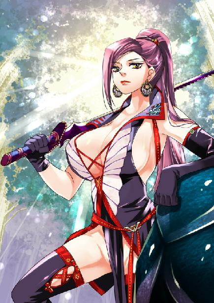
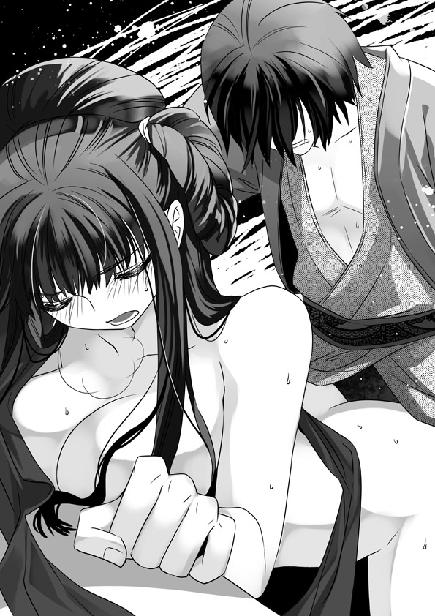
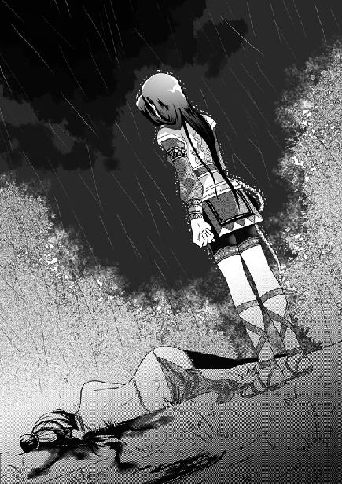

第12集·苍龙星阵
南荒篇（9/9）
出版日期：2010-07-08
【本集内容简介】
众人齐心仍挡不住鬼巫王与龙神合一，气焰高涨的鬼巫王却没有发觉自己是为他人作嫁，人龙合体合是合了，但不是鬼巫王合龙神的体，而是龙神合了鬼巫王啊！面对暴怒的巨龙，程宗扬一行与南蛮诸部落该如何求生？
弑母的小紫、借种的苏荔，就算程宗扬能以主人的身份命令南荒人坐下来谈判，也挽不去刻入他们血骨中的不安与杀戮，面对这无解的纠葛，程宗扬也只能但尽人事……
终于挥别南荒这个令他惆怅又费解的地方，程宗扬却发现，自己的冰蛊离发作只剩十几天，而距离五原城还有一个多月路程！
※ ※ ※ ※ ※

封面人物：齐羽仙

插图：乐明珠

插图：小紫弑亲
强大的气流从井底升起，剧烈的风声在耳边呼啸而过，使人几乎无法呼吸。
程宗扬竭力舒展四肢，身体水平，手中鼓满风的鲛绡弓起，仿佛一道彩虹悬在空中，减缓了两人坠落的速度。
程宗扬紧盯着黑暗的井壁，一边计算着心跳。和自己预料的一样，十三次心跳之后，从井底升起的气流突然消失，鲛绡传来的拉力减弱下去，身体的坠势猛然加速。
被小紫暗算而困在井里的时候，程宗扬已经发现井底上升的气流不但强劲，而且很有规律：每隔三百次心跳出现一次，持续时间是十三次心跳。
十三次心跳的时间大约是十秒，平常情况下，足够他们落到井底，但这股上升的气流太过强烈，大大阻缓了坠落的速度，以至于气流消失，自己离井底还有三十米的高度。这样的高度即使是跳水也极端危险，一旦角度失误，平跌下去，强大的冲击力也足以致命。
虽然早有准备，气流消失的一刻程宗扬背后仍禁不住渗出冷汗，抱在他腰间的乐明珠更是吓得不敢睁眼，两团充满弹性的美乳紧紧贴在他胸前，传来急切的心跳。
程宗扬紧盯着飞速掠过的井壁，然后双臂一挥，鲛绡贴住光滑的井壁，猛然绷紧，扯得手腕一阵剧痛。程宗扬旋过身，背脊在井壁上狠狠一撞，那条充满韧性的鲛绡晃动着慢慢停住。
忍着手腕的疼痛，程宗扬暗暗透了口气。幸好是这幅鲛绡，换作其他布料承受两个人从高处坠下的重量，肯定要被撕烂。
乐明珠悄悄从他怀中抬起眼睛，惊讶地看着鲛绡悬在井壁一个细小的凸起上面。
程宗扬笑道：“小香瓜，怕了吗？”
乐明珠脸色雪白，仍强撑着声音发抖地说：“我……我才不怕……”
“那就好。等会儿我们再跳一次——喂，你的腿是不是在发抖？”
乐明珠讷讷地说：“我想回去……不是啦，我是想，怎么回到上面去？”
“啊？”程宗扬惊讶地说道：“你还要回去？我难道没有告诉你吗？跳下来就回不去了。往后我们只能待在井底，哪儿也去不了了。”
乐明珠生气地说：“你骗人！你肯定有办法回去！”
程宗扬道：“想听实话吗？真的没有。不过在下面也没什么不好，平时让他们给咱们扔点吃的，然后我们就……”程宗扬贴在她耳边道：“玩插屁股的游戏，到时在井下没有人打扰，我们每天想插几次就插几次……”
程宗扬在乐明珠耳边开着玩笑，缓解她的紧张，其实自己也心头忐忑。井底那个庞然生物很可能就是鬼巫王说的龙神。不管它是否真的是龙，体型够大是肯定的。
自己一点都不喜欢冒险，但有些危险无法躲避。如果在上面的洞窟强撑下去，等到鬼巫王与龙神合体，获得龙神的力量，众人再也没有翻盘的机会。
好在龙神一直沉睡，干掉一条睡龙的危险总比面对获取龙神之力的鬼巫王要小。至于小香瓜，程宗扬再大度，也不肯拿了她的鲛绡，让她光着身子给鬼巫王看，只好带她一同冒险。
当气流再次涌起，程宗扬用脚撑住井壁，奋力向上一纵，双手抖开鲛绡，带着乐明珠朝黑暗的深处坠去。
身体被气流托起，井底岩石般的凸起依稀可见。气流停止的刹那，程宗扬一翻身把乐明珠抱在身前，背脊朝下，失去凭借的身体石块般堕入井底。
“砰”的一声，背脊重重撞在一片坚硬的地表上。程宗扬眼冒金星，浑身的骨骼仿佛都被摔得散开，发出“咯咯”的响声。
乐明珠骑在他腰间，巨大的冲击力使她上身弹起，两团丰满的乳球在胸前沉甸甸跳起，抖出一片白花花的肉光，然后又跌到他怀中。
程宗扬搂着乐明珠香软的肉体，吃力地调匀呼吸。
平台距离井底差不多有二十层楼高，从这样的高度跳下来，无疑是一个巨大的冒险。幸好，自己赢了。
第一次被小紫暗算跌进井里，能攀住井壁的凸起完全是凭运气。这一次凭的则是勇气和眼力。
乐明珠余悸未消，伏在程宗扬怀中不停发抖。程宗扬忍痛摸出火褶，去掉封在上面的石棉，用力吹了几口，火光亮起，映出眼前一个巨大的空间。
待在井底，程宗扬才真切认识到这口井有多么巨大，自己就像一只偶然闯进巨人国的小蚂蚁，向上仰望，只能隐约看到井壁中段透出的光亮。而那个不知名的生物盘踞在井底，深井巨大的空间甚至无法容纳它的头颅。
洞窟内没有程宗扬想象中满布的尸骸，岩石上覆盖着厚厚的青苔，上面淌着龙涎一样透明的液体，在潮湿的空气中散发着奇异的香气。那条庞然巨物伏在洞底，头颅半埋在岩石间，在这股异香中沉沉入睡。
它凸起的眼球像山丘一样巨大，此时覆盖着一层岩石般的眼睑，正在沉睡。宽长的嘴吻前端没入岩石，嘴吻后部一对弯齿交错咬紧，每一枚都有三四个人那样高。在它吻部两侧，各生着一条长长的软须，鼻部山峰一样隆起，颈后与颔下长满浓密而坚硬的鬃毛。头顶一对巨大的弯角，一直延伸到井壁的岩石中，角质苍黑如铁。
那巨兽体表覆盖着鱼一样的鳞片，仅仅额头一片鳞甲，直径就比程宗扬整个人还长。鳞片色泽乌黑，上面生长着金属般的纹路，像年轮一样密集，最上面的部分由于久远的岁月，纹路已经连为一体。厚重的鳞甲与山体黑色的玄武岩交融在一起，分不出哪个是鳞片，哪里是岩石。
“这……这是什么东西？”
“龙。”程宗扬用发干的声音道。
没想到自己会见到一条真正的龙，而且是零距离的亲密接触。它的头颅和传说中的龙一模一样，龟目、鱼鳞、鹿角、狮鬃、鲇须、牛耳……那条披着鳞片的庞大身躯伸入岩石，与大地融为一体，就像洪荒时代遗留下来的神兽，充满了远古的神秘气息。
本来对干掉龙神兴致勃勃的乐明珠这会儿大气也不敢出，直瞧着这头庞然大物发呆。
程宗扬从来没想过，自己会有一天像一名骑士那样去完成屠龙的壮举。望着巨龙庞大的头颅，程宗扬觉得给自己一根牙签去宰一头大象可能更容易些。
这家伙，实在是太大了。站在它的鼻梁上，看着它的额头，就像山一样，浓密的龙须低垂下来，每一根都有两丈的长度。
“哇……”乐明珠两手捂着胸口，小声惊叹道：“真的是龙呢……它好大啊……喂，你要怎么杀它？”
程宗扬老实答道：“不知道。以前没杀过。”
“你先想。”乐明珠眼睛发亮地说：“我要拔一根龙须带回去给师傅！”
程宗扬一把拉住她，在她耳边小声说道：“知不知道你光屁股的样子很惹火啊？再晃你那对大奶球，我就先干你的屁股，再去干掉龙神。”
乐明珠白了他一眼，抢过鲛绡裹在身上，然后小鸟一样快乐地朝巨龙颈侧飞去。
巨龙伏在岩石间，对身上多出的两人毫无反应，不知道是他们太渺小，还是因为巨龙仍在鬼巫王的巫术中沉睡。
程宗扬抬起手放在巨龙厚厚的眼睑上，仿佛摸到一片坚硬的岩石。
巨龙眼睑再结实，总硬不过钢刀，真不行自己还有珊瑚匕首，就算它眼皮真是岩石做的，也能掏出一个洞来。程宗扬暗道：只要刺瞎它一只眼睛，不怕它不从沉睡中醒来。到时候鬼巫王想合体，要面对的就是一条发狂的怒龙。
程宗扬深深吸了口气，稳住心神，然后拔出钢刀。接下来的一幕，却让他头发都竖了起来。
那只生物眼睑忽然一动，向上翻起，露出一只巨大的眼珠。它的眼球呈现出金属般的银白色，瞳孔如同黑色的巨潭，望不到尽头。
在它瞳孔中央映着一道清晰的人影。那人衣衫褴褛，手臂和肩膀被鲜血染红，曾经多余的赘肉消失不见，露出肌肉结实的线条，头发已经长及脖颈，面颊变得削瘦，表情多出几分坚毅，但唇角却带着一丝若有若无的坏笑……
恍惚中，程宗扬看到自己从前的影子。一个平凡的小职员，像蝼蚁一样在人海中挣扎，寻找一滴属于自己的蜜糖。
程宗扬挺身挥刀，朝自己的影子劈去。
巨龙漠然垂下眼睑，钢刀劈在岩石般的眼睑上，随即反弹回来，仅仅留下一道细微的白痕。
巨龙鼻中发出一声低沉的轰鸣，接着一股狂风陡然卷起，洞窟瞬间变成暴风的世界，强大的气流奔突涌动，使人无法站稳。程宗扬不得不把钢刀插进巨龙鳞片的缝隙里，两手握紧刀柄。
耳膜被奔雷般的风声震动，片刻后，程宗扬才听到乐明珠的惊叫。她双手紧紧抓住一根龙须，身子被吹得飞起。那条鲛绡被气流扯得几乎从她的胴体上滑脱，大半乳峰暴露出来，在风中摇动。光滑的龙须无法握紧，乐明珠身体一点一点向后滑去。
“别慌！握紧！”程宗扬拔出珊瑚匕首，用力钉入巨龙的鳞片，像攀岩一样贴着鳞片朝龙颈攀去。
乐明珠吓得哇哇直叫，鲛绡打结的尾端松开，雪白的臀部裸露出来，光洁的身体仿佛一条光溜溜的美人鱼，在空中游动。
程宗扬拔出匕首，身体刚一抬就被气流卷起。他顺势抱住乐明珠纤软的腰肢，右手一挥，匕首钉入龙鳞，身体逆风飞起。
气流在洞窟中激荡，洞壁上的青苔凹陷下去，透明的龙涎从青苔的缝隙中挤出，缓缓向下流动。气流旋转着涌入深井，隐约能看到平台上几个正试图攀缘下来的人影低头躲避着气流。
突然间，呼啸的狂风猛然停止。程宗扬两耳的轰鸣声仍在持续，乐明珠浑身冰凉，紧紧攥着那根龙须，偎依在他怀中。
程宗扬松开发酸的手臂，在巨龙颈上喘息片刻，然后挥刃斩断那根被小香瓜看中的龙须，“拿好。”
“刚才是它在呼气吗？好厉害啊……它为什么没有吸气？是不是另一只鼻孔在吸？它是不是还在睡觉？为什么不醒？”乐明珠惊魂甫定，叽叽喳喳抛出一串疑问。
“大概我们两个太小了。就像一只蚂蚁落在你身上，你也不会理它吧。”
程宗扬拿着那根龙须，试着打了个结。龙须有拇指粗细，色泽苍黑中微微发蓝，质地柔软而富有韧性。他把龙须结在乐明珠腰间，但小丫头又改了主意，指着巨龙嘴侧那条鲤鱼一样的软须，说道：“我要那个！”
程宗扬没好气地说：“它比你人都粗，拿得动吗？”
乐明珠兴奋地说：“我可以把它背回去啊。那些小师妹们看到它，就知道我有多厉害了！”
程宗扬被她兴奋的样子逗得笑了起来，伸手揉了揉她的脑袋，“先想想怎么干掉它吧！”
“你不是扎它眼睛了吗？”
“太硬了，没砍动。”
乐明珠想了一会儿，“我们可以从它耳朵里钻进去！”
这个主意不错，不过巨龙头颅嵌在山体中，耳朵被坚硬的玄武岩堵住，想从岩石间开出一条路通到它的耳朵，大概需要两个人钻上一个月。
“鼻子也可以啊。”
“瞧见刚才的风了吗？它都不用打喷嚏，只要呼口气就把我们吹跑了。”
“嘴巴！”
程宗扬打量了巨龙一会儿，小声道：“记得以前的祭品吗？这里连根毛都找不到。我敢肯定，咱们两个加起来还不够它塞牙缝的。”
连续几个主意都被否定，乐明珠不高兴地说：“只让我出主意，你怎么不想呢？不知道动脑筋很累的吗？”
程宗扬抬头望着嶙峋高昂的龙角。那条巨龙呼吸间隔极长，伏在山岩间的龙首仿佛与岩石融为一体，沉沉入睡，对他们这两只小蚂蚁不屑一顾。
“趁它没醒，我们上去看看。”
程宗扬揪住龙须，挺身朝龙颈上面攀去。在两人脚下，龙神凸起的眼睛忽然一动，眼睑微微睁开一线。
一点明亮的光芒在龙神眼前出现，仿佛夜空中闪烁的寒星。
※ ※ ※ ※ ※
谢艺像猎豹一样半伏着身体，然后侧身疾掠，手起刀落，砍断一名鬼武士的大腿，随即与一只魇魅绞杀在一处。那些魇魅来去无声，每一只都有着非人的力量，即使谢艺应付起来也颇为吃力。
一只魇魅突然在洞口附近出现，绕过凝羽，扑到武二郎身上。武二郎一条手臂虽然被阴煞吸食而肌肉萎缩，身体的力量却丝毫不减。他低吼一声，沉腰坐马，生着虎斑的肩背一侧，将魇魅撞出丈许。
魇魅飞向一丛斜生的石笋，眼看尖利的石笋就要刺穿胸背，魇魅胸口忽然裂开，任凭石笋从胸口穿出。它站起身，将身体从石笋上拔出，只有眼白的双眼泛起血光，胸部的伤口缓缓愈合。
“啵”的一声轻响，仿佛密封的纸盒被人刺穿，魇魅身体一晃，扑倒在地。小紫笑靥如花，细白的纤指从魇魅脑后一个隐秘的部位拔出。
“又死了一个呢。”小紫美妙的童音响起，笑吟吟道：“神圣无比的鬼巫王大人，你的奴仆越来越少了呢。”
“无知的蠢才。我征服的部族像天上的星辰一样多，”鬼巫王抬起双手，“大地与星辰的力量都将为我而战！”
鬼巫王挺起胸膛，身上黑色的铠甲与琥珀般的祭台光辉交织在一起，散发出金属般乌亮而深邃的光芒。他抬起左腕，右手拿起鬼羽剑，剑锋缓缓切开苍白皮肤下暗青色的血脉。
“东宫苍龙，列星成阵！”鬼巫王喝道：“角木蛟！”
泛着金属般暗红光泽的血珠从剑锋下滚出，鬼巫王面沉如水，轻若羽毛的鬼羽剑轻轻一振。
“天田！”
一颗硕大的血珠飞出，悬浮在他身前尺许的空中，不停滚动。
“天门！”
又一滴血珠飞出。两滴鲜血一左一右，左为天田，右为天门，如同苍龙虬劲的双角，结成东宫苍龙七宿中的第一宿——角宿。
“亢金龙！”
鬼巫王剑锋轻振，接连弹出四滴细小的血珠。
“库楼！摄提！贯索！飞血！”
四滴鲜血点缀出苍龙七宿第二宿——亢宿，宛如四颗星辰依次在角宿右侧弧形陈列，勾勒出苍龙昂起的咽喉。
“氐土貉！”
“阳门！阵车！天驷！河间！西咸！明堂！钩钤！列肆！”
鬼巫王每一声喝出，都有一滴暗红的血珠从腕间飞出，准确地飞入星位，罗列出苍龙七宿第三宿——氐宿四星：阳门、阵车、天驷、河间；然后是第四宿——房宿四星：西咸、明堂、钩钤、列肆。
氐为天根，氐宿四星紧贴龙颈向前凸起，仿佛苍龙探出的利爪；房为腹房，房宿四星垂直而下，犹如苍龙强健昂扬的胸腹。
“喔！”易彪暴喝声中，用残盾砍在一具尸鬼颈上。尸鬼青灰色的皮肤绽开，头颅歪向一边。
一只魇魅突然出现，重重撞在易彪胸口。武二郎挺肩把魇魅撞开，然后一把抓住尸鬼，猛虎般的头颅“砰”地砸在尸鬼脑门上，将它颅骨撞得粉碎。
易彪浑身伤口迸裂，虎目中淌下两行血泪。坐在地上的吴战威张手抱住他的腰，翻身用背脊挡住炎煞的一击，衣服顿时着起火来，露出发黑的皮肉。幸好凝羽的月牙弯刀及时赶到，才救下他们两人的性命。
谢艺刀如闪电，先荡开鬼武士的重矛，再劈开骨虎破碎的利爪，然后翻起，用刀背磕在一只尸鬼的膝上，再与一只魇魅硬拼一记，将它震得飞开，硬生生从群敌中闯出一道缝隙，闪身朝祭台上的鬼巫王掠去。
鬼巫王身前十余血珠宛如天空的星辰，交错罗列，隐隐勾勒出二十八宿中东方苍龙七宿的轮廓。
小紫目光微微闪亮，忽然弹出一枚细针，直射谢艺背心。
“心月狐！”
“大火！大辰！鹑火！”
鬼巫王腕上接连迸出三滴硕大的血珠，每滴血珠迸出都仿佛被无形的力量牵引，飞至房宿侧旁的星位。大辰在左，鹑火在右，中间一颗血珠大如拇指，色泽鲜红夺目，正是七月流火的那颗星辰：大火。三颗大星心形排列，密集地聚在一处，组成苍龙七宿的第五宿——心宿三星。
谢艺身在半空，鬼巫王已经喝道：“尾火虎！”
“宗正！帛度！天江！天纪！杵东！九河！屠肆！市楼！异雀！”
腕上暗红的血珠连串溅出，血光疾闪，组成第六宿——尾宿九星。九颗星辰弯曲如钩，向上挑起，宛如苍龙凶猛有力的尾部。
龙尾伏辰，多战而凶，尾宿也是苍龙七宿中最为凶险的一宿。鬼巫王接连挥出九滴鲜血，完成尾宿的排列，也耗费了大量精力，脸色苍白得近乎透明。他深吸了一口气，沉声喝道：“箕水豹！”
“孔雀！东海！宗人！”
四滴血珠飞向苍龙七宿中最后一宿——箕宿。
箕宿四星犹如龙尾带出的云气。四星一旦就位，用来召唤龙神精魂的苍龙星阵便宣告完成。即使黑魔海天王亲至，也无法阻挡他与龙神合体。
洞窟内尸骸遍布，一具惨白的女尸僵硬地横在地上。她双乳高耸，乳下被摘去心脏的伤口被阴影笼罩，正是被谢艺破去心脏的女尸鬼朱诺。
就在谢艺掠过的刹那，朱诺突然抬起手臂，从腕骨穿过的铁链飞起，砸向谢艺的面门，谢艺身体游鱼般在空中一摆，避开铁链。
谢艺移身的同时，小紫弹出的细针紧贴着他脖颈飞过，流星般射进鬼巫王鲜血凝成的星宿间，占据了一个星位。
※ ※ ※ ※ ※
鬼巫王血珠依次飞向箕宿的星位，第一星孔雀、第二星东海、第三星宗人，第四星星位却被那枚小小的细针占据，飞溅而出的血珠与细针一触，便星星点点溅开，在空中化为无形。
鬼巫王切在腕中的鬼羽剑震颤了一下，骇人的目光射向小紫。
如果小紫直接弹出细针，他只需轻轻一拂便能把细针击飞。但小紫狡黠地利用谢艺为掩护，细针飞到中途才突然从谢艺背后射出，使鬼巫王的苍龙星阵仅差最后一颗星，功败垂成。
小紫笑道：“鬼巫王大人，你流了好多血呢。”
鬼巫王面容微微抽动。此时谢艺已经甩开朱诺的缠击，杀到面前。
凌厉的刀风扑面而来，鬼巫王昂起头，被程宗扬削断的发丝猎猎飞起。
二十九滴血珠组成的阵法在他身前尺许的空中悬浮滚动，每一滴都散发出暗红的光泽，仿佛夜空中滴血的星辰隐隐闪亮，却因为最后一颗星位的细针而无法闪露光芒。
谢艺刀光乍然亮起，像闪电一样照亮了鬼巫王的面孔，几乎映出他皮肤下苍白的颅骨。
“星月湖谢艺，送鬼巫王大人上路。”谢艺沉声喝道：“此去黄泉，已无多时！”
鬼巫王面冷如冰，腕间的鬼羽剑陡然爆出一团带血的光芒，如同黑暗中夺目的电光，绚烂无匹，迎向谢艺的刀锋。
刀剑相交，谢艺抓住鬼羽剑转瞬即逝的细微破绽，刀尖一旋，破入剑光，斩在鬼巫王握剑的掌上。
鬼羽剑“锵啷”落地，鬼巫王手背由指到肘多了一条细细的血线，接着迅速变得殷红。
谢艺一刀斩落鬼巫王的长剑，随即回刀朝他颈胸挑去。
鬼巫王手臂仍保持着握剑的姿势，斜斜伸出。他唇角露出一丝淡淡的笑意，越来越大，最后疯狂地大笑起来。
谢艺瞳孔陡然一缩，只见鬼巫王右手溢血的中指按住那枚细针，指尖正点在箕宿第四星的位置，一滴鲜血从他受伤的手指流入星位。
鲜血组成的苍龙七宿刹那间活了过来，龙角飞扬、龙亢高昂、龙爪威探、龙胸怒张、龙心收拢、龙尾舞荡，带着箕状的血色风云，昂身盘绕在鬼巫王闪亮的锁甲上。
谢艺劈往鬼巫王颈侧的一刀被星阵阻挡，刀锋发出细碎刺耳的响声。
鬼巫王抬起滴血的手指，厉声道：“我苍龙星阵已成！即使九天诸神，也只能俯首退避！”
伴随着鬼巫王的呼叫，那些妖魔般的魇魅放开围攻的商队众人，仿佛一团模糊不清的影子向后急速飞来。它们发出鬼叫般扭曲的嚎泣声，被鬼巫王身畔飞舞的星宿吞噬，一只只化为乌有。
接着隐藏在地下的尸鬼接连破土而出，它们被苍龙星阵强大的力量吸引，胸腔裂开，已经干枯的心脏脱体飞入星阵。朱诺像处在狂风中一样身体向前弓起，僵硬的双乳被扯得变形，乳头的铁环和铃铛笔直伸出，刚刚愈合的伤口再次绽开，还未成形的心脏被拉出体外。伏在地上的丹宸肢体扭曲，雪白的臀部像裂开一样被吸得抬起。
旋转的星阵透出血一样暗红的光芒，虎煞松散的骨爪踏入血影，白森森的骨骼变得透明，一点一点消失在血腥的星光中。炎煞火红的岩浆像水一样从石柱上流淌下来，汇入流动的群星。阴煞嚎叫着想要躲开，却被龙尾卷住，那个透明的影子像气泡一样鼓胀起来，“噗”的一声轻响，被苍龙七宿吞没。仅剩的几名鬼武士颓然倒地，头顶的鬼角失去光泽，变得黯淡下来。
强大的气流像飓风一样卷过全场，鬼巫王毫不留情地吞噬着自己的奴仆，将它们化为自己的血肉和力量。他身上黑色的铠甲一点一点鼓起，苍白的皮肤浮现出龙鳞般细密的纹路，在血腥的星光下泛起诡异的血光。
两名赤裸的女尸鬼俯在鬼巫王脚下，惨白的躯体仿佛涂上血光。鬼巫王张开滴血的手掌，一把抓住朱诺和丹宸的头发，狂吼道：“大地之下的龙神！我，南荒的主人！命令你从沉睡中醒来！”
“吞下你的祭品！将你的神力赋予你的主人！”
随着鬼巫王的厉吼，大地深处传来一阵震动。
※ ※ ※ ※ ※
“这是什么东西？”程宗扬和乐明珠瞪大眼睛。
巨龙眼前的星芒一点一点亮起，组成星宿的图案，在它黑曜石般巨大的瞳孔里投下影子，先是两点，然后是四点、四点、四点、三点、九点、三点……最后一点隔了片刻才出现，但它一出现，整个星图都仿佛活了过来。
星群耀目的光芒映出巨龙厚重的眼睑、苍黑色的鳞片、雪亮的獠牙和它深潭般的瞳孔。
从沉睡中醒来的巨龙眼睑慢慢抬起，等那三十颗星光组成的星宿亮度攀到最高峰，它脖颈一动，半陷在岩石间的头颅微微抬起。成吨重的玄武岩在它巨大的头颅前轻易破碎，山体扭曲破裂，发出恐怖的碎裂声。
“抓紧龙角！”程宗扬把乐明珠压到胸前，叫道：“它醒过来了！”说着弓起腰背，准备承受将要袭来的冲击。
巨龙头颅缓缓抬起，洞窟顶部生满青苔的岩石滚落下来。程宗扬和乐明珠紧紧挤在龙角下方的空隙中，心头完全被震惊和恐惧充满。
一声高亢的龙吟响起，不知在地下沉睡了多少岁月的巨龙摆动头颅，撕开井口的岩石，昂身朝洞口飞去。无数石块如同雨点般落下，头顶巨大的深井被龙角撕成两半，光滑的岩壁轻易被龙体的巨鳞挤碎。
“四哥！”小魏扑过来，把祁远推进洞口。那道凸起的平台随即断裂，像一条石梁翻滚着落入井底。吴战威靠在易彪身上，一手紧拉着站立不稳的云苍峰。
洞口的铁门朝两边倾斜过去，然后脱落下来，重重拍在岩石上，发出一声巨响。
龙吟声响起，小紫脸色就变得雪白，凝羽轻轻一拉，她才退开，紧靠着背后的岩石。连一向牛气冲天的武二郎这会儿也傻了眼，本能地把苏荔抱在臂间，和众人一样盯着身后那口深井。
伴随着悠长的龙吟，一对虬曲的龙角从井中升起，成块的岩石从裂开的井壁上脱落，然后露出龙神像山丘一样巨大的眼睛。
每个目睹这一幕的人都把心提到喉咙里，大气也不敢喘一口，完全被这超越自然的一幕震骇。
“走！”
谢艺掠过来，先扯起小紫往洞窟深处一抛。小紫身不由己地飞出十几丈，眼看就要跌在石上，忽然身下一软，身体像落在一团棉花上般轻轻坐倒。接着吴战威、易彪、小魏、祁远……都被一一掷来，即使伤势最重的易彪也没有牵动伤口。
谢艺这手功夫令众人又惊又佩，武二郎也醒过神来。他“啪”地合上那张没有遮拦的大嘴巴，用力抹了把口水，一把抱起苏荔大步奔过去。
凝羽拉开小紫，自己却没有动。她发丝零乱，美目紧盯着龙角，叫道：“见到他们了吗？”
山体破碎的轰鸣声震耳欲聋，谢艺扯住凝羽，不由分说地掠向洞窟深处。
巨大的龙首升起，隔着洞口与鬼巫王遥遥相对。
那个可供几个人并肩通行的洞口甚至无法容纳龙神的嘴巴，只能看到它巨大的牙齿在唇中时隐时现，和下颔的龙须飞扬。
“这……这是什么鬼东西？”祁远脸色发青，那条能说出花来的舌头，这会儿一个劲儿地打结。
“龙。”谢艺简短地答道。
“祖宗……”祁远瞪着龙首，发出一声惊叹。
谢艺道：“鬼巫王要与它合体？”
小紫最初的惊惧很快消失，有些不情愿地说道：“这下好了，他的法阵已经结成了，过一会儿他吸取了龙神的力量，我们就等着死光光吧。”
武二郎虎着脸道：“杀了鬼巫王！”
“杀不了啦。”小紫道：“你没看到那些鬼物都消失了吗？他身边的星阵比铠甲还厉害。”
苏荔忽然道：“那他还在等什么？”
鬼巫王双目泛起异样的光彩，一向隐没不见的鬼角此时也显露出来。他克制住狂喜的冲动，用低沉的声音说道：“龙神！是我唤醒了你！这是你的祭品！拿去吧！”
鬼巫王抓住朱诺和丹宸的头发，把她们推向前去。
“他在等龙神上钩。”小紫像看到什么好玩的事物一样，绽开一丝笑容，“她们身体里面有毒。”
苏荔冷冷道：“你还笑得出来？”
“反正要死了，为什么不笑呢？”小紫嘻笑道：“苏荔姐姐，你不如自杀好了，就算被鬼巫王炼成尸鬼也比活着强呢。”
苏荔寒声道：“你为什么不去死？”
“因为小紫还小啊。”小紫踮起脚尖，贴在她耳边轻声道：“你以为你装得很乖，他就会放过你吗？别作梦了，鬼巫王就喜欢玩你这样的女人。朱诺活着的时候就被他玩了好久，肚子还被玩大了呢……”
苏荔羞怒地挑起眉峰，抬掌朝她精致的面孔挥去，却被谢艺拦住。
忽然整座洞窟像要翻倒般一震，龙神巨大的嘴巴挤进洞口。
程宗扬肩膀被滚落的岩石擦伤，血淋淋一片，幸好乐明珠用拳头打了一记，才避免整块岩石砸到他身上。两人藏在弯曲的龙角下面，乐明珠一叠声地问：“痛不痛？痛不痛？”
程宗扬咬牙动了动肩膀，都是皮外伤，并不严重。乐明珠正要为他裹伤，却惊叫一声。
巨龙头颅昂起，伸进洞口，弯曲的龙角顶进岩层。岩石纷然碎裂，被龙角划出两道深痕，巨大的山体朝两人直压下来。两人急忙躲在龙角后面，背脊贴紧龙角，看着粉碎的岩石从身边划过。
鬼巫王周身旋转的星阵流溢出血泊一样的红光，东宫苍龙七宿龙角、龙亢、龙爪、胸房、心脏、龙尾、箕云，首尾相连，犹如一条赤红的血龙盘在他身上，在他黑色的铠甲上翻滚游动。
鬼巫王盯着靠近的龙神，神情越发亢奋，苍白的面孔露出病态的红色。忽然他昂首发出一声狂吼：“你看到了吗！我比你希望的更加强大！连上古的龙神也拜服在我的脚下！殇侯！我会让你看到一个崭新的南荒！比你梦想的更华丽！”
咆哮声中，鬼巫王把两具美艳的女尸鬼推向龙神，“拿去吧！”
鬼巫王张开双臂，握住身旁盘旋的星辰，迎向即将与自己融为一体的巨龙，胸腔深处发出低沉的轰鸣，“把你的力量交给我！”
龙神岩石般的眼睑翻开，巨大的眼珠停在鬼巫王身上，然后嘴侧软须轻摆，不屑地将朱诺和丹宸弹开，接着张开巨口，宽阔的龙舌朝鬼巫王卷去。
沉浸在狂喜中的鬼巫王神情大变，大理石般苍白的面孔一瞬间露出惊恐欲绝的表情。他大叫着去拔鬼羽剑，想阻挡巨龙的长舌，但身旁旋转的星阵陡然收紧，苍龙七宿如同一道血珠组成的血色枷锁，将他身体牢牢捆住。
龙首将一连串钟乳石撞得粉碎，巨大的嘴巴张开，露出弯刀般的龙牙和深不见底的咽喉。
鬼巫王表情扭曲，他的四肢被自己施展的星阵紧缚着，手指握紧鬼羽剑，却怎么也拔不出来。
龙神巨大的嘴巴一口吞下鬼巫王，然后像山一样合上。
“咯”的一声，巨龙的嘴巴像咬到硬物一样停住。
鬼巫王额上金色的鬼角伸出，卡在龙神的齿缝中。他咬紧牙关，苍白的面孔透出暗紫的血色，被斩断的头发披散下来，黑色的铠甲一块块鼓起，又被星阵缚得凹陷下去。
巨龙牙关慢慢合上，鬼巫王握紧剑柄，浑身的骨骼咯咯作响。忽然“咔”的一声，鬼巫王头顶的鬼角折断。
“黑——黑魔海！该死的骗子！我做鬼也——”
鬼巫王疯狂的叫声蓦然断绝，龙神嘴巴合拢，像品尝美味一样，眼睛微微闭上，齿间发出“咯咯”的碎响。
“叮”的一声，鬼羽剑从龙神齿间滑落，掉在石上，剑锋殷红的血迹仿佛被抽干鲜红，变得乌黑。
“吁……”
冥冥中传来一声悠长的叹息，仿佛在为鬼巫王送行。
“这……这……”祁远舌头打结得更厉害了。
突如其来的异变，不仅每个人都呆若木鸡，连小紫也一脸发怔，完全被这意外的一幕惊呆了。
鬼巫王为了这一天已经筹备了多年——吸取龙神的力量，成为南荒无可匹敌的王者。谁知道鬼巫王召唤出的龙神却把他本人一口吞食。鬼巫王的血肉、灵魂和力量，都成为龙神的祭品。
巨大的碎石从洞窟顶部掉落，在巨龙苍黑色的鳞甲上碎裂开来，一块块滚入破裂的深井。龙神昂起头，喉咙微微一动，将口中的食物吞咽下去，然后沉重的眼睑低垂下来。
正当众人以为龙神又陷入沉睡时，龙神眼睛忽然张开，巨大的眼球透出一缕异样的光彩，原本冷漠的眼神变得凶狠而恶毒。
众人面面相觑，最后还是小紫第一个反应过来，她转身朝洞口的台阶奔去，娇叱道：“是鬼巫王！他与龙神合体了！”
巨龙发出一声巨吼，众人被强大的气流抛起。祁远一声怪叫，中箭的肩膀狠狠撞在岩壁上，若不是乐明珠已经取出箭头，他这条膀子便废了。
武二郎怪叫道：“不是鬼巫王和龙神合体吗？怎么反过来了？”
没有人能回答他，已经裂开的深井向下倒塌，龙神庞大的躯体从地层深处脱出，带着纷飞的岩石冲出地窟，巨大的力量使整个鬼王峒都为之倾颓。
程宗扬和乐明珠紧紧攀着龙角，看着那口深井在脚下飞速远离。巨龙破开岩层在山体中穿行，他们看到山体整片整片地崩裂碎落，深陷地下的鬼王宫被龙神庞大的身躯带得倾斜，那些精心雕刻的石像像细小的棋子一样碰撞在一起。
忽然眼前露出暗红的火光，龙首冲开最后一层山岩，从鬼王峒的山峰一侧伸出。
无数碎石从巨龙庞大的躯体上滚落，鬼王峒巨大的山体破开一个大洞，峒后的深渊像被刀锋切开，布满交错的裂缝，橘红色的岩浆潮水一样沿着裂缝奔涌而出，碰撞着迸出巨大的火球。
龙神巨大的龙爪抓住山体，眼中透出恶毒的光芒。在它身下，整座鬼王峒火光四起，目光所及到处是奔涌的岩浆，不多时就变成一片火海。幸存者像蝼蚁一样从洞窟中涌出，发出恐惧的叫喊，不辨方向地相互碰撞着乱成一团。大地震裂的轰鸣声与人们的惨叫交织在一起，如同末日降临。
枝状的龙角向后弯曲，在龙角下形成一个狭小的空间，程宗扬和乐明珠拥抱着躲在里面。龙神一路破岩而出，纷落的岩石都被龙角击碎，两人幸运地没有受伤。
地底奔涌出的岩浆越来越多，火红的光芒奔涌着，像燃烧的血池将鬼王峒的山峰包围起来。无数细小的人影从破碎的山体中四散逃出，靠近山脚的人群来不及逃避，随即被奔涌的岩浆吞没，爆出一个小小的火球，像蚂蚁一样挣扎几下就没入火海。
鬼王峒山体大半被龙神破坏，露出蜂窝状的内部。几匹健马嘶鸣着从洞窟内奔出，程宗扬认出是商队的马匹，领头一匹毛色乌亮，正是自己的黑珍珠。几块巨石滚落下来，黑珍珠灵巧地一跃，跨过巨石，后面一匹却被击中，滚入山下的岩浆中。
终于，几个熟悉的身影出现在视野中。谢艺从碎石间掠出，流星般在倾颓的岩石上飞驰。这时程宗扬才看出谢艺真正的底子，这样山崩地裂的巨变，他仍能从容飞跃，似乎世间没有任何东西能够束缚他的自由。
武二郎更猛，他一手挟着易彪，一手挟着吴战威，肩膀上扛着云苍峰，手里还抓着苏荔的手腕，带着四个人如风一样闯出来。
“凝羽！”程宗扬大声叫道。
“小紫！”乐明珠也在旁边喊。
谢艺倏忽停下脚步，朝他们比了个手势。祁远和小魏陆续逃出来，接着小紫跃上地面，一边掠向高处，一边四处张望，似乎在寻找什么人。
乐明珠大叫着朝她挥手，小紫扬起脸露出一个甜甜的笑容。最后一个上来的是凝羽，她衣衫几处着火，连鬓发也被燎去一截，白玉般的脸颊上泼着几滴鲜血。
程宗扬两手放在口边，叫道：“凝羽！我在这里！”
凝羽抬起脸，露出惊喜的表情。她大声说了几句，程宗扬一个字都没听见，只好伸伸胳膊和腿脚，表示自己安然无恙。
山体倾颓，大地沉降，震天的轰鸣中却传来一个奇怪的声音。
“亲娘哎……”那声音撕心裂肺地叫道：“救命啊……”
那声音带着哭腔，听在耳中，让程宗扬油然生出一种想打人的冲动。
“我是不是耳鸣了？”程宗扬疑惑地说道。
乐明珠道：“我好像也听到了呢，像是朱老头的声音。”
程宗扬一怔，随即哈哈大笑，“哈哈哈哈！怎么可能！那老家伙不是死在洞里面了吗？”
乐明珠望着纷乱的人群，“好像很近呢。”
“救……救命啊……”
程宗扬心里忽地一动，他一手攀着龙角，低头望去。朱老头像只跳蚤一样吊在龙神颈旁，两手紧紧攥着龙须，翘着山羊胡拼命呼救。
程宗扬收回脑袋，乐明珠道：“怎么了？”
“哈哈，我眼花了。没事，没事。”
“救命啊！”
“咦？”乐明珠伸长颈子，眨了眨眼睛，“好像在那边呢。”
程宗扬拉住她，“那边没人。”
“小程子……救命啊……”
“我听到了！真的是朱老头！他在叫你呢！”
“不可能，你肯定是听错了。”程宗扬皱起眉头，一脸凝重地说道：“我看这条龙很麻烦……”
“小程子……救命啊……我在这儿呢……”
程宗扬充耳不闻地说道：“现在最要紧的是怎么保住性命，从这儿逃出去。”
“小程子……我……我看见你了，哎哟！别踩，是我！朱八八啊……”
“八你个头啊！”程宗扬一脸不爽地踢了踢龙须。
乐明珠探过身子，“他真的在这儿呢！”
“我是朱老头！朱老头啊！救命啊……”
程宗扬假意低头看了一眼，“哎呀，原来是你啊，怎么在这儿呢？”
朱老头带着哭腔喊道：“小程子……瞧在咱们这一路同行的面子上，拉老头一把啊……”
程宗扬为难地说道：“不是我不想拉你，这上面……实在是没位置了。”
“我来！”乐明珠挤过来，“抓紧啊！”一边说，一边两手交替拉动龙须，把朱老头拉了上来。
※ ※ ※ ※ ※
朱老头死狗一样趴在龙鳞上，满脸都是鼻涕眼泪，“哎哟哎哟”地叫唤着。
程宗扬堆起笑脸，“朱老头，哪阵风把你吹来了？气色很好嘛。”
“我是招谁惹谁了？”朱老头哭丧着脸道：“好不容易找到个桥缝躲着，桥却塌了。幸好俺手快抓了根龙毛，要不老头就见不着你了……小程子，老头可想死你了啊。”
“可不是嘛，我也想死你了。”程宗扬拍了拍老头的肩膀，“这龙怎么突然醒过来了？鬼巫王呢？他搞出的什么狗屁法术？”
“鬼巫王？被这家伙给吞了！”
“什么！”程宗扬失声道：“它把鬼巫王吞了？”
“可不是嘛。”朱老头痛心疾首地说道：“你是没看见呐……惨！真惨呐！打鸟的让鸟给啄了，你说这算啥事呢？”
朱老头哀声叹气地说：“鬼巫王那憨货，作梦都想跟龙神合体。这下倒好，弄到龙肚子里跟龙神一块儿过日子去了。我就知道，黑魔海那帮孙子没一个好鸟！打一开始就揣着贼心！欺负鬼巫王那憨货不懂事，说是帮他，把他骗得死死的。”
乐明珠道：“鬼巫王真的被它吃了？”
“渣都没啦！你是没见到，鬼巫王搞的那个什么苍龙星阵！那玩意儿！七宿齐出！吓得俺腿都软了。结果没收掉龙神，反倒把自己搭了进去。合体是合体了，可把自己合给龙神了。抢鸡不成，连米缸都赔出去了。惨啊……”
程宗扬小心地拍了拍龙角。鬼巫王那家伙竟然变成这样子，恐怕他自己也没想到吧。
“你说这都是黑魔海搞的鬼？”
“可不是嘛！”朱老头吹着胡子说。
“为什么他们要扶植鬼巫王呢？黑魔海这么厉害，自己来不是更方便吗？”
“南荒这鬼地方，邪气太重！”朱老头抹了抹嘴角的唾沫星子，“几百个部族看外人都跟看贼一样！谁愿意听外人的？黑魔海自己做，这活儿不好干啊！他们先弄出个鬼巫王，把南荒的部族吞并得差不多了，再教鬼巫王那憨货玩什么苍龙星阵，把鬼王峒底下的龙神给召出来。这下可好，鬼巫王没了，龙神也被那帮孙子收了，要不是撞到你们这几个外人，神不知鬼不觉就把南荒弄到手。高！真高啊。”
朱老头絮絮叨叨说个不停。身下的巨龙突然发出一声怒吼，吼声中充满了愤怒和不甘。
程宗扬急忙攀住龙角，“它不会是听懂了吧？朱老头，这家伙这会儿是鬼巫王呢？还是龙神？”
朱老头面如土，“这我哪儿知道？如果是鬼巫王，它可不会放过你啊，小程子。”
龙神用狠毒的目光盯着鬼王峒蜂拥而出的奴隶，它的头颅已经昂到山腰，尾部还留在地层深处，庞大的躯体覆盖着苍黑色的鳞片，背部生着暗紫色的龙鳍，如同从地底钻出的洪荒巨兽。
从鬼王峒逃出的幸存者被这一幕震骇，本能的敬畏使这些来自南荒不同部族的人纷纷跪下，朝龙神顶礼膜拜，祈求它的饶恕。
程宗扬暗叫不妙，鬼巫王变成这副鬼样子，肯定对自己这帮人恨之入骨，南荒人却把它当成神明，不用打就先败了。
程宗扬聚起功力，放声喝道：“南荒的子民们！鬼巫王已经被这条妖龙吞掉了！它还要毁掉南荒！我命令你们！拿起你们的武器，杀死它！”
短暂的惊愕之后，几名幸存的部族首领首先反应过来。他们敬畏地看着龙首上的主人，然后大声下令。剩下的南荒人如梦初醒，纷纷拿起兵刃，疯狂地朝龙神冲去。
地下发出令人心悸的碎裂声，接着地面裂开，一只龙爪从地层中伸出，在虚空中一按，龙神昂起头，沿着鬼王峒刀锋般的山体盘旋而上。它巨大的躯体连绵不绝地从地底伸出，岩石在它鳞片上纷然破碎，整座鬼王峒都为之震动。
龙神一直升到山峰顶上，然后一爪扣住倾斜的山体，庞大的躯体在岩石上摩擦着，留下深深的凹痕。它威严的头颅在刀尖般的山峰顶部昂起，对着黑色的天幕发出一声怒吼。
大地裂开，沸腾的岩浆四处奔涌，橘红的火光占据了整个视野。程宗扬从龙首往下看去，鬼王峒庞大的山峰如同火海中的孤岛，又仿佛一柄在熔炉中冶炼的弯刀，浸没在翻滚的岩浆中。
岩浆不断上升，吞噬着残存的山体。鬼王峒仿佛燃烧的地狱，空气中充满硫磺的气息。南荒的奴隶们挽起弓箭和他们能找到的所有武器朝龙神攻击。
巨龙庞大的躯体盘在山峰上，一半躯体仍留在岩石中。岩浆顺着它的鳞片涌出，地面向下沉降，整座山峰渐渐向一侧倾斜。再过不了多久，整座鬼王峒都将坠入奔涌的岩浆里。
龙神扭过龙首，苍黑的瞳孔带着无比的厌憎和恨意盯着身下崩溃的世界，然后昂身而起，朝鬼王峒没有光明的天空飞去。
大地深处传来震雷般的轰鸣，龙神巨大的躯体脱出岩层，长长的尾部夭然舞动，燃烧的岩石从它躯体上滚落，坠入岩浆，溅起一片片火光。它毫不停顿地扑上鬼王峒的天空，用龙角和龙爪撕开头顶的大地。
岩石和泥土伴随着强烈的气流雨点般洒落，程宗扬紧紧搂着乐明珠，用肩背承受着纷飞的土石。朱老头趴在龙角下，嘴里不停叫着“菩萨啊，亲娘哎……”
忽然，一道刺眼的光芒从巨龙角上的泥土中射出。
阳光亿万年来第一次射入鬼王峒，明亮得令人眩晕。巨龙咆哮着撕开大地，龙躯苍黑的鳞甲带着坠落的火光，掀开厚厚的泥土，从地底蜿蜒飞出。
程宗扬眼酸得几乎流泪，片刻后才适应了眼前的光线。
阳光下，天地万物都鲜明耀眼。头顶是碧蓝的天空，大地上繁茂的森林在阳光下一片青绿，白色的鸟群从林中飞起，盘旋着飞向远处连绵的山峦。大片大片的鲜花在草丛间盛开，空气中也不再充斥着死亡和腐败的气息，到处浮动着醉人的花香和阳光的味道，美得令人眩晕。
看惯了鬼王峒单调而沉重的黑色，眼前一瞬间被鲜艳的色彩占据，程宗扬重重吐了口浊气，让清新的空气充塞胸臆。
乐明珠纤柔的发丝在颈中飞舞，带来酥痒的触感。小丫头几乎忘掉了龙神的威胁，圆圆的面庞满是兴奋的神情，她攀着龙角低头朝下看去，就像第一次坐云霄飞车的小女孩一样，发出半是惊恐半是兴奋的尖叫。
说实话，坐在龙首上可比云霄飞车刺激多了。龙神头颅一摆，就摆动出上百米的幅度，刺激的程度足以让人心脏都跳出来。但小丫头一点都不怕，反而兴高采烈。
巨龙强劲有力的尾部从地下甩出，将地面撕出一个方圆数里的巨大裂口。深埋在地底的鬼王峒亿万年来第一次暴露在阳光下，奔涌的岩浆仿佛燃烧的湖泊，吞噬着倾颓的山峰。
失去目标的幸存者拼命向高处攀去，但他们唯一能依靠的山峰却在向下沉陷，无论他们逃到哪里，也无法避免被岩浆吞噬的结局。
在地底沉睡万年的巨龙冲出岩层，在天空中越飞越高。乐明珠紧张地攀着龙角，不时发出兴奋的惊叫。朱老头缩成一团，恨不得整个人都钻到龙鳞下面。
龙神一直飞到天际，直到鬼王峒的裂口看来只剩下碗口大小才停下来。四周的云气仿佛被龙神的力量吸引，潮水般涌来，围聚在它苍黑的躯体旁。云气越聚越多，晴朗的天空在云层遮蔽下迅速变得阴暗。
龙神嘴侧两条软须上下浮动，眼中寒光四射。它呼出的气体融入云雾，云层越发浓密，白色的云团迅速凝聚成浓重的乌云。龙神利爪拨开云层，巨大的鳞片在云中时隐时现，然后咆哮起来。
一道闪电划破长空，暴雨倾盆而下。
密集的雨点涌入敞开的鬼王峒，落在火红的岩浆上，化为一股股白烟。龙神摆动着龙尾，云层滚滚翻动，雨势越来越大。
程宗扬浑身都被大雨淋透，肩膀的伤口一片痛楚。透过云层能看到鬼王峒奔涌的岩浆在雨水冲刷下渐渐停止流动，火红的色泽变成暗红，又冷却为岩石的黑色。那些岩石仍保持着奔涌的形状，仿佛一片凝固的波涛。
幸存的南荒人并没有幸运太久，暴降的雨水迅速泛滥成灾，刚经历过烈火焚烧的人群很快被洪水吞没。
暴雨中，龙神巨大的头颅低昂下来，盯着山峰上一群人影，然后探出锋利的前爪，朝人群抓去。
人群中传出一片惨叫，被龙爪扫中的人群肢体纷飞，大片大片的鲜血喷溅出来。龙爪挥击的前方，一个身影正在岩石间飞驰，离爪尖越来越近。
在龙爪触及腰背的刹那，谢艺忽然退身，拧腰双手握住刀柄，刀锋避开锋利的龙趾，从它爪根结合处破入鳞甲，硬生生劈入尺许。
巨龙怒吼着爪尖一挑，谢艺身体弹丸般飞出。
鬼巫王的意识融入龙神体内，同时也将他对商队众人的刻骨仇恨烙入龙神脑中。它的爪尖被谢艺刺伤，虽然这样的伤口对它庞大的躯体而言微不足道，但足以引起龙神的愤怒。
龙神再次伸出前爪，巨大的爪影遮住天空，仿佛一道山脉从天而降，将谢艺和他旁边的商队同伴笼罩在爪影下。众人面露惧意，连苏荔的眼神都变得绝望。
武二郎放开苏荔，暴喝声中，周身骨骼发出一串炸响，身形迅速膨胀。他额头凸起，口中抽出两对虎齿，被阴煞咬过的手臂肌肉重新鼓起，身上的衣物不堪重负地迸裂开来，露出肌肉虬结的强健躯体。
武二郎精赤着上身，发出一声虎啸，身上金黄的虎斑四处扩张，蜿蜒着覆满皮肤，如同一头斑斓猛虎咆哮着冲向巨龙。
龙神低下头，不屑地盯着化为虎形的武二郎。武二郎身形膨胀将近一倍，野虎般掠过山体，与扑下的龙爪撞在一起。
“咯”的一声，龙神魔隼般的爪尖裂开尺许长一条裂缝，武二郎也被这股巨大的力道震得倒飞出去。
龙爪略微一阻，笼罩在爪影下的众人趁机逃脱。龙神须鳞怒张，那些被它巫术操控、却效忠于程宗扬的南荒奴隶从四面八方展开攻击，龙神金属般的鳞片发出连绵不绝的响声。
武二郎像头猛虎般一挫，然后翻身跃起，他“嘿”的一声，抱起一块牛犊大小的岩石，将这块重逾千斤的巨石举过头顶，奋力朝巨龙眼睛砸去。
龙神头颅微摆，牛犊大的石块砸在它鼻侧的鳞片上，纷然碎裂，雨点般洒落下来，坚硬的龙鳞也被砸得凹陷。龙神眼中腾起怒火，龙爪扑上山体，带来地震般的撞击声。
碎石纷飞中，一条猛虎般的汉子蹿出，密集的劲气交击声连串响起，武二郎赤手空拳，狂喝着击向巨龙的利爪。
武二郎一连数拳都打在巨龙趾爪相接处的同一个部位，龙爪坚逾钢铁的鳞片裂开一道细缝，边缘卷起。受阻的巨龙愈发愤怒，它头颅低垂，身体浮在空中，长长的龙尾一直伸入云层，左爪攀住倾斜的山体，右爪扬起，要将这只该死的小虫子拍死。
“抓住我！”
程宗扬松开龙角，翻身朝龙首下方掠去，乐明珠连忙抓住他的脚踝。
朱老头吓得脸都白了，“小子，你不要命了！”
程宗扬身体倒悬，双手握住刀柄，力贯双臂，朝巨龙眼球挑去。巨龙头颅一摆，程宗扬身体荡开，刀锋刺在巨龙眉骨上，被它坚硬的鳞甲弹起。乐明珠惊叫一声险些脱手。程宗扬顾不上害怕，叫道：“用那根龙须绑住我！”
乐明珠叫道：“你要做什么？”
程宗扬指着巨龙蜿蜒的鼻梁，“顺着那里能爬到它眼睛旁边！把我放到它的眼角，只要它睁开眼睛，我就让它变成一条瞎龙！”
乐明珠尖叫道：“小心！”
巨龙利爪扬起，朝额上的程宗扬抓来。就在这时，“叮叮叮”一串金铁交击的脆响密集响起，龙神脸上立刻多了一片弩矢。
劲弩从头顶雨点般飞来，那些弩矢锋利异常，虽然没能穿透龙神的鳞甲，但每一支都深深钉入鳞片。其中一支弩矢长及两丈，比寻常用的长矛还粗了几倍，准确地射在巨龙嘴侧没有鳞片覆盖的部位，绽出一片血花。
负痛的龙神弓起身体，发出一声龙吟。仿佛回应它的咆哮，密布的乌云中射下无数闪电，大地为之震动，裂缝边缘一棵千年巨松被闪电击中，像火炬一样燃烧起来。
“第二组！射！”
随着一声号令，又一片劲弩飞来，目标是龙神的眼睛和鼻梁。
朱老头怪叫着险些被一支流矢射中，连滚带爬地钻到另一侧龙角后面，蜷着身瑟瑟发抖。
程宗扬抬起头朝弩矢射来的方向望去。覆盖在鬼王峒上的地面原本是一片森林，此时地面被龙神撕开一条长达数里的裂隙，成片的树木与泥土一同陷入地层。
断裂的森林边缘立着一支陌生的军队。他们身穿黑色的布衣，每三十人一组，分成六个方阵，在暴雨中仍站得丝毫不乱。每一组都有二十名弩手，剩下十人守着中间一架巨弩。
那架巨弩宽及丈许，长度更是超过两丈，放置在槽中的弩矢由整棵松木削成，表面涂成黄色，铁制的弩首两翼张开，宽及两尺，散发出令人战栗的寒光。
“大黄弩！”程宗扬失声叫道。
“好厉害的弩。”乐明珠小脸雪白，这一轮劲弩如果朝自己射来，最多只能避开其中的一半。
程宗扬紧盯着那架巨弩，惊愕之余又疑惑不已。他曾在资料上见过这种弩，虽然仅仅是文字记载，可第一眼看到这架巨弩，他就断定这是传说中的劲弩。
大黄弩——车弩中最凶猛的一种。这种弩是汉军最犀利的远程武器，曾有过用大黄弩一箭射塌城墙的纪录，堪称冷兵器时代的神作。
可是一支成建制的汉军，为何会在偏僻的南荒出现？而且还要帮自己攻击龙神？
难道是……程宗扬心头闪过“黑魔海”这三个字，立即朝那些陌生的军士望去。
来到这个世界后，自己见过不少军队，每支军队都有它鲜明的特点。这支军队没有带甲，无法从铠甲的形式判断他们的身份，虽然使用汉军才有的大黄弩，但他们的佩刀刀形狭长，显得轻快灵便，而汉军最典型的配备是长达一米、刚猛强劲的环首刀。
汉军使用的大黄弩通常用牛马绞动弩弦，这支军队完全是依靠人力。两名军士负责搬运弩矢，一名军士负责瞄准，余下七人绞动弩弦，将放在矢槽中的大黄弩迅速拉紧。
黑魔海的人总不可能站在自己一边，攻击龙神吧？谢艺曾经说过，黑魔海的势力十几年前被岳帅连根拔起，不可能这么快就建立起一支军队。
一名指挥官站在这支陌生的军队前大声发号施令。两个准备好的方阵瞄准巨龙的眼睛和嘴巴，弩矢撕开雨幕，带着尖锐的响声飞向龙神的头颅，其中两支大黄弩分外醒目，即使以龙神之威也不能无视它的锋芒。
巨龙须齿怒张，咆哮着挥出利爪，一爪将那两支饱含威胁的大黄弩击开，一爪扑向鬼王峒，龙爪一按一抬，爪下便多了数十具碎裂的尸体。
残存的南荒部族从下仰攻，他们或是放箭，或是掷矛，更多的则像蚂蚁一样攀俯在巨龙身上，在它坚如金石的鳞片上刀砍斧劈。虽然他们武器不够犀利，力量不够强大，但胜在人数够多，数十人合力，时不时地从巨龙身上剥下一片鳞甲。
那支陌生的军队居高临下，六个方阵分为三组，持续对龙神造成威胁。他们的弩矢锐利异常，大黄弩更是不可小觑。虽然与龙神庞大的躯体相比，两丈长的大黄弩就像根牙签，但只要射中就能撕开龙神的坚甲，带出一片血花。
“鬼巫王！”程宗扬大声喊道：“你已经变成这副鬼样子，还能做什么？就算你能统治南荒，就算你在南荒无敌，你还能做什么！还有人会把你当人吗？你永远都是一条不人不鬼的怪物了！”
龙神蜿蜒的躯体一震，然后发出一声怒吼，龙尾脱离云层，在鬼王峒的山峰上盘旋翻滚。每一爪挥出都收割下一片生命，不多时已扑杀了数以百计的奴隶。
谢艺身影迅捷无伦地在龙爪的空隙间飞驰，却始终再没有出手，目光闪闪不知在找寻什么东西。
武二郎势如疯虎，狂呼恶战，独自牵制了一只龙爪。在他的重击下，龙爪的鳞片不时破碎飞开。
越来越多的奴隶攀附在巨龙身上，弓箭和飞矛雨点般朝龙神射去。
苏荔抢过一张弓，跃上巨石，纤手一张将弯弓张成满月，闪动寒光的箭矢瞄向龙神两角之间的程宗扬，然后挑起唇角，箭镞微沉，流星般射向龙神瞳孔。
龙神本来俯首下扑，张口咬向武二郎。箭镞一点寒光袭来，它眼睑微闭，箭矢射入眼睑，穿透了它眼部岩石般的皮肤，阻止了它下扑的威势。
南荒人士气大振，一名生着狼尾的南荒勇士攀上龙神尾部，用长矛撬开坚固的龙鳞，贴着龙鳞的缝隙朝内刺去。龙神吃痛地甩动尾部，将他远远甩得飞出。
与龙神庞大的躯体相比，那些曾经的鬼王峒奴隶就像蚂蚁一样细小，纵使是最勇猛的战士也只能用生命为代价，在龙神身上留下一道微不足道的伤口，但没有一个人退缩。
程宗扬这时才见识到噬魂巫术的厉害，自己一声令下，这些人都敢和坦克肉搏。他禁不住朝小紫看去，如果不是她，这些奴隶此时应该是和龙神一起来攻击自己，胜负根本不用怀疑。
幸存者大多已经离开洞窟，其余人不是被崩塌的山体砸死，就是被封在洞窟内经受岩浆和暴雨的双重侵袭。小紫远远站在一旁，目光却在洞窟间游移，似乎在找一个还没有出现的人。
“你看！”乐明珠扯住程宗扬，用力指着远处一个身影，“凝羽姐姐！”
凝羽立在一块凸出的岩石上，面对着愤怒的龙神，她扬起脸，洁白的面孔在暴雨中愈发莹润。她朝程宗扬微微一笑，飘飞的白衣仿佛被遮掩的月光一样渐渐散去，身形凭空消失。
“哇！”乐明珠惊叫着瞪大眼睛，“这就是凝羽姐姐的匿踪术？好厉害！”
朱老头喉结滚动着咳出一口浓痰，“呸”的一口吐远，吧叽着嘴嘟囔道：“怪好的女娃娃，就是心眼死了点儿。”
程宗扬心悬起来，顾不上理会朱老头，叫道：“凝羽！别过来！”
凝羽搏杀的时间远长于自己，这会儿冒险拼上最后一点余力，万一失手，连自保的余地都没有。
龙神伏下头颅，咆哮着喷出一片烈焰。光秃秃的岩石燃烧成一片火海，几名南荒战士来不及闪避，顿时被烈焰焚成枯骨。
龙神头颅抬起，避开又一轮弩矢。苏荔射来的长箭落在尖利的龙齿上，撞得粉碎。武二郎钢鞭般的虎尾卷住龙神的利爪，盘身扑上巨龙爪背，虎掌连击，撕开巨龙爪背的鳞片。
龙神庞大的躯体不停翻滚，鬼王峒黑色的岩石在它鳞甲下被磨得粉碎。在它龙角上方有一片厚密的乌云旋转着，云下电闪雷鸣，暴雨倾盆，浓黑的云层边缘被阳光镀上一道金色的光环，远处阳光普照的森林清晰可见。这种亦雨亦晴的诡异天象，令人过目难忘。
龙神脖颈弓起，龙目歹毒地转动着。
忽然，一个飘飞的纤影在它头颅正前方出现。凝羽张开手，月光流动着凝成一支光矛，然后奋力朝龙神双目正中的部位射去。
※ ※ ※ ※ ※
月矛银白的光芒在闪电间一闪而过，龙神嚎叫着垂下头颅，两眼正中的鳞甲破碎，溅出一团鲜血。
程宗扬嘶声道：“小心龙息！”
龙神受伤的鼻孔张开，龙须潮水一样在颌下浮动着，呼出一股强大的气流。
凝羽真元几乎耗尽，被这股气流一卷，身体落叶般从空中飘落。
“凝羽！”程宗扬大叫道。
凝羽苍白的面孔迅速远去，程宗扬一颗心紧绷得似乎随时都会爆裂。他盯着凝羽，看她勉力维持身体的平衡，却在龙息中身不由己地旋转。
“凝羽姐姐！”乐明珠伸出手想拉她，两人却隔着数丈的距离。
“何苦呢？”朱老头一边哀声叹气，一边连连摇头。
“闭嘴！”程宗扬踹了他一脚，一边叫道：“苏荔！”
苏荔射出最后一支长箭，接着飞身跃起，银白透明的蝎尾斜掠而出，卷住凝羽的腰身。
不等程宗扬紧悬的心放下，龙神尾部一只巨爪破开乌云，扑向那两具身影。它低下头颅，染血的龙首愈发凶狞恐怖。
苏荔发丝被龙爪带起的狂飙吹散，她张开弯弓将自己的钗子当成箭矢，射进龙神的鼻孔。龙神嘴侧长长的软须伸出，似乎想把她们两个一并揽入口中。
凝羽拼尽最后的余力凝出一面月光盾，扬手朝龙神掷去。龙神软须轻摆，一只利爪破空袭来，轻易把月光盾击得粉碎，毫不停顿地朝两女扑去。
一道身影冲天而起，武二郎沉腰旋身，一肘击在龙爪上砸碎一片龙鳞，将龙爪阻缓一步，借势向前扑出，旋风般搂住两女。
龙爪略一停顿，再度挺出。武二郎避无可避，暴喝着弓起背脊，用虎躯承受住龙神一击。
“砰”的一声巨响，武二郎庞大的身影像一枚松果般抛出，身在半空就喷出一口鲜血，如同漫天血雨淋得苏荔满身都是，那具猛虎般的身躯失去力气，流星般堕向地面。
程宗扬盯着跌落的武二郎，心脏也似乎跟着他的身影飞速下坠。
“第一组！”
随着一声号令，弩矢再次飞来。龙神威猛的头颅摆动着，龙躯昂起，喷出的气流将弩矢吹得七零八落，只剩两支大黄弩也被它龙爪抓住。
武二郎重重跌进鬼王峒嶙峋的山岩间，苏荔和凝羽几乎同时落在他强壮的虎躯上。凝羽唇角滚出一串鲜血，面颊苍白如雪。苏荔一把抱住武二郎的头颅，叫道：“武二！”
武二郎面如金纸，胸前淋淋漓漓都是鲜血。
龙神一边应付袭来的弩矢，一边甩动龙尾。巨大的龙躯如同一道蜿蜒翻滚的山脉，将峒上的一切碾为斋粉。几名生着豹纹的南荒汉子被龙尾荡开，坠入峒下凝固的岩浆间，跌得粉身碎骨。
“为鬼巫王大人报仇！”
一头白象从一座倾塌的洞窟中奔出，象背上的汉子满面鲜血，他双手各握一根长矛，狂吼着将一支长矛掷向龙神。
“黑魔海的骗子！去死吧！”
“是他！那个……那个阁罗！”乐明珠讶道：“他怎么会在这里？”
“他发现自己被骗了，又逃了出来。”
阁罗被鬼巫王有意支走，可能没走到洞底就听到鬼巫王临死前的惨叫，发现自己上当了。可他竟然还回来与龙神搏斗，这份勇气也足够对得起鬼巫王了。
龙神双目被鲜血染得通红，它坚硬的鳞片将阁罗的长矛弹开，接着带鳍的长尾扫出，十几名正在射击的南荒奴隶一瞬间被龙尾抹平。
阁罗驱动白象，挺矛朝龙神撞去。铁矛穿透一片绽开裂缝的鳞甲，刺进龙神身体。紧接着龙尾挥来，白象低下头，弯刀般的象牙刺进龙体。
那头白象虽然体型庞大，但比起龙神还差得太远。庞大的躯体微微一晃，像一座倾斜的山丘般向后坐去，发出一声巨大的哀鸣。
阁罗手中的铁矛像根鱼刺般弯曲过来，然后弹开，重重打在胸口，将他胸膛打得凹陷下去，接着白象沉重的躯体倾斜过来，将他压在下面。
龙尾这一击本来足以将阁罗连同他的坐骑碾平，却因为眼角突然袭来的剧痛偏了少许。
程宗扬从它颅顶跃下，一刀刺进巨龙眼角，大叫道：“鬼巫王！你最后一名族人被你杀了！鬼王峒所有人都死光了！你还要斗吗！”
龙神眼角淌下一串暗红的鲜血，它凶恶的瞳孔收缩尺许，转向内侧，狠狠盯着程宗扬，然后移向地上的白象。
时间仿佛停止，天空密布的乌云像一个巨大的漩涡，在龙神峥嵘的角上缓缓转动。龙神巨大的眼睛盯着白象，在它尾部的鳞片内，嵌着两根折断的象牙，龙血顺着象牙如泉水一样淌落。弩矢不断飞来，巨龙却视若无睹，深黑色的龙睛仿佛被雨水淋湿。
片刻后，龙神发出一声巨吼，天地为之震撼。
“干！”程宗扬用匕首借力，飞身跃上龙首，一把抱住乐明珠，一边把挡路的朱老头踢开，朝龙角后扑去。
龙神巨大的头颅撞向山体，鳞片像黑色的雪花一样飞舞起来。鬼王峒弯刀般的山峰从三分之一处折断，轰鸣着倒入深渊。
大地一阵晃动，无数电光从空中落下，交织成一片炫目的电网，裂缝边缘的巨松一棵接一棵燃烧起来，接着又被暴雨浇灭，变成焦黑的颜色。
龙角深深切入山体，然后晃动着拔出。龙神昂起头，再次撞向山体，似乎要用整个鬼王峒给阁罗陪葬。
乐明珠雪白的胴体漾起红光，飞溅的碎石像雨点一样弹开，尖叫道：“让它停下来！”
“它疯了！”程宗扬吼道。
“阿耨多罗亲娘哎……三藐三菩提……佛祖保佑亲娘哎……波罗揭谛……”朱老头躲在龙角下，涕泪满脸也顾不上擦，哆哆嗦嗦一边喊娘一边念经。
龙角击碎山体，程宗扬眼前出现一片地狱般的场景：大地倾圮，血流四野。磷火像萤火虫一样从洞窟深处飞出，弥漫在峒内的死亡气息蜂拥而至，额角的生死根跳动着，不停传来灼热感。
这些死亡气息一脱离鬼王峒的范围就变得和从前一样散乱无章，自己所熟悉的恶心和反胃的感觉再次涌来。
天空被乌云遮蔽，大地漆黑如墨。交织的电光中，一道身影箭矢般飞起。
谢艺双手握刀，趁龙神昂首的时刻，刀锋劈开龙神颈下柔软的鳞甲，一路朝下劈去。
龙神胸腹的鳞甲与背部截然不同，背后的鳞片交错排列如同鱼鳞，胸腹则是龟腹般横生的软甲，色泽发白。刚才的搏杀中，龙神一直用背爪抵挡箭矢，小心掩藏着柔软的胸腹。
谢艺不动声色，目光却透出坚毅。他手中的钢刀直没至柄，血花飞溅中，在龙神咽喉下方切开一道长长的伤口。龙神发出一声吃痛的厉吼，庞大的躯体弓起，然后用力甩动。
谢艺身体仿佛黏在龙神喉下，锐利的刀锋越拖越长，一路朝龙神心腹剖去，力道绵绵无尽。
两支大黄弩呼啸着射向龙神双目，一支被龙神的软须挥开，另一支则射中龙神鼻梁侧方，鳞甲飞散中，大黄弩笔直钉入数尺，重创龙神。
龙神尾部盘住鬼王峒断裂的山体，溅血的龙躯昂起，咆哮着伸出龙爪朝悬在喉下的谢艺抓去。谢艺身体一翻，矫健地从巨龙爪影中飞出，那柄从不离身的单刀脱手而出，射进龙神的伤口。
龙神胸腹裂开一道丈许长、两尺深的伤口，鲜血狂涌，龙爪仿佛失去力量般垂下。
幸存的众人都屏住呼吸，看着谢艺的身影在雨幕中画出一道弧线，以比龙爪更快的速度，轻捷无伦地朝山后飞去，最后在空中轻轻一纵，脱离龙神的爪影。
人群发出一片欢呼，连那支陌生的军队也停止射击，朝谢艺投去充满敬佩的一瞥。
凝羽用指尖抹去唇角的鲜血，微微一笑，又吐出一口鲜血。武二郎枕在苏荔雪白的大腿上，脸色惨淡，胸口微微起伏，看来一时半会儿还死不了。祁远、小魏、吴战威击掌相庆，连云苍峰也露出笑容。
程宗扬重重喘了口气，挽住雀跃的乐明珠，“抱紧！它要落下去了！”
龙神庞大的躯体跌落下来，龙首砸进山体，溅起漫天的碎石。它威猛的头颅钉着数百支弩矢，鳞片下迸出无数细小的血迹，颈下鲜血狂涌，只一瞬间就染红了山岩。
龙神瞳孔收缩着变成血红，盯紧飞落的谢艺。忽然一道电光从云层中劈下，宛如飞舞的银蛇射入谢艺背脊，带着粉末状的血迹从他胸前穿出。
谢艺的身体一震，然后仿佛失去重量般从空中笔直堕下。
程宗扬大吼一声，不由自主地跳了起来，两手微微发抖。
耀目的电光间，谢艺的身影仿佛凋零的落叶般飘下，落在一只秀美的玉足旁。
小紫不带感情的眼光落在谢艺身上，轻轻笑了起来，然后若无其事地抬起眼睛，望着龙神头颅上的程宗扬。
程宗扬狂吼道：“死丫头！看什么看！见死不救！我干死你！”
小紫不屑地撇撇嘴，正要移开眼睛，忽然像看到什么一样顿住了。片刻后，小紫抬起双手对程宗扬比了个繁复的手势。
程宗扬怒火中烧，厉声道：“快救人！他还没死！”
乐明珠拉住他，“小紫在对你说话呢！”
几缕轻烟从谢艺胸前的伤口边缘冒出，接着被暴雨浇熄。程宗扬吼道：“说个屁啊！没良心的死丫头！再不救人小心我砍死你！”
小紫翻了翻眼睛，用口形说了句“大笨瓜！”然后又比了一遍手势。
“她在说龙角！”乐明珠在程宗扬耳边大叫道。
程宗扬从惊怒中醒悟过来，扭头朝小紫示意的部位望去。
龙神两根山峰般的龙角中间有一块凸起的颅骨，直径尺许，上面覆盖着细密的鳞片，鳞下微微有光芒闪动。
“大笨瓜！”乐明珠贴在程宗扬耳边叫道：“小紫说龙脑在那里！”
小紫的手势似乎还有别的意思，但程宗扬顾不上细想，他“呸”了一声，然后抛下钢刀，从腕下取出珊瑚匕首，力贯双臂，狠狠朝龙角间突起的颅骨刺去。
龙鳞发出金属破碎般的声音，匕首雪亮的锋刃穿透鳞片，重重刺在龙颅内的骨骼上。
龙神伏在山腰间，咽喉下方被谢艺刺伤的部位鲜血狂涌，暗红的龙血沿着鬼王峒黑色的岩石潮水般淌下。它低吼着甩动龙尾，格开头顶飞射的弩矢，然后扬起，发疯般从森林边缘扫过。
巨松轰鸣着成片倒下，一组弩手被龙尾扫中，连同阵中的大黄弩一同被卷入空中，像飘飞的羽毛一样四散飞开。
程宗扬双手握紧匕首弯曲的刀柄，咬牙侧身一刺，龙神颅骨上钢铁般的鳞片裂开，刀锋划破龙神坚韧的皮肤，露出里面白色的骨骼。
朱老头吓得面如土色，哆哆嗦嗦地说道：“别……别胡来……龙可是神灵，不是那么容易杀的……”
“再废话我先捅死你！”
龙骨坚硬之极，削铁如泥的珊瑚铁匕首刺在上面，只刺入寸许，程宗扬便已经力竭。他长长吸了口气，舌尖顶住上颚，丹田气轮疾转，一股炽热的气流迅速汇集，全身的经脉都以同样的速率震动，真元交汇，在丹田内凝炼成一个光球，不停旋转。
程宗扬收敛心神，真气一个呼吸间游走一周天，丹田余力再生，凝炼出第二个光球。两团光球沿着一条无形的弧线对称转动，循环不息。
程宗扬明显感觉到丹田内压力大增，起码增强了一倍，经脉像被充满般不停鼓胀，经脉内流动的真气也受到这种无形的压力而涌动得更加强劲。
自从跟凝羽双修，修习她那种不知名的功法，程宗扬就把王哲传授的九阳神功放到一边。九阳神功修习起来就是从丹田到十二经脉一遍一遍运转真气，扩张经脉，聚炼真元，过程十分枯燥，远不及凝羽的功法进境迅速，更重要的是缺乏乐趣——难怪那么多人喜欢双修呢！
以程宗扬的修为，以前最多只能凝炼出一阳，这还是拜王哲给自己筑下的根基所赐，现在一连凝炼出二阳，不禁精神大振。程宗扬拼尽全力，又凝炼出第三个光球。
这个光球体积比前两个小了一半，丹田的承受力已经达到极限，传来略带痛楚的胀裂感。九阳神功每修炼一阳，威力都以倍数增加，看来自己离三阳的境界还差了一些。
程宗扬一不做二不休，将真气沿手少阳经络送入指尖。九阳真气透过匕首锋刃，“咯”的一声，匕首刺入龙骨，但还差了最后寸许，无法穿透龙神的颅骨。
“我来帮你！”
乐明珠身体腾起红光，一掌拍在匕首尾部。她的真气炽热无比，与程宗扬的九阳真气一触，两股真气像彼此吸引一样，螺旋状绞在一起，相辅相承，却又泾渭分明。两人合力一击，刀锋不堪重负般微微弯曲，然后猛地弹直，穿过坚硬的龙骨透颅而入。
龙神额角几处鳞片被山石磨碎，露出血红的痕迹。它踞伏在折断的山体上，一动不动。
刀锋深深嵌入颅骨，一股森然而妖异的气息顺着刀锋袭来。程宗扬双臂如受雷殛，还未送出的光球反弹回来，重重撞入丹田，眼前顿时一黑，腹中气轮剧震一下，几乎破碎。
乐明珠手掌握住刀柄，胸口像被一柄铁锤击中，丰硕的乳球向上弹起，惊叫着朝后倒去。一抹诡异的青色光芒从龙神颅骨的裂隙扇形飞出，乐明珠身体被震得飞起，重重撞在龙角上。
朱老头也被波及，葫芦一样滚到龙角下，一边惨叫，一边手忙脚乱地在身上掏着什么。
程宗扬溅血的衣袖破碎开来，肤如刀割。光球重重弹回丹田，传来一阵剧痛，一股蛰伏多时的阴寒气息从身体一侧的经脉涌出，与爆裂的九阳真气绞在一处，像是要将经脉扯碎一样四处涌动。
程宗扬双膝跪地，两臂触电般颤抖，半晌才猛地吐出一口鲜血。
鲜血吐出，胸口仍然剧痛如焚。程宗扬视力渐复，看到乐明珠软软倒在龙角下，朱老头趴在旁边，抓着一把丹药玩命地往嘴里塞。
程宗扬压住呕血的冲动，劈手抓住朱老头的手腕，狞声道：“死老头！干什么呢！”
朱老头噎得直翻白眼，一个字都说不出来。程宗扬毫不客气地抢过他手里绿色的丹药，随便抹了抹，看了一眼然后把一颗药丸丢进嘴里。
朱老头努力伸着脖子，好不容易才喘过气来，“别……别……”
丹药入腹，迅速被气轮吸收，火热的九阳真气与那股阴寒气息以一种凶险的姿态归于平静。程宗扬瞪着朱老头，自己就知道这老家伙身边有救命的东西，要不他早就死二百多次了。
朱老头一脸肉痛，“这活命丹是我老人家好不容易得来的，就这么几颗，你给我留点儿……”
“滚！”
程宗扬蛮横地把他撞到一边，俯身扶起乐明珠，把一颗丹药塞到她嘴里，接着又塞了一颗。
朱老头心痛得腮帮子直抖，一边“哎哎”地叫着：“哎，一颗就行！哎，两颗就够了！哎，可不能再吃了……哎哟！你给我留点儿啊……”
绿色的丹药剩下寥寥几颗，程宗扬顺手塞进背包，瞪了朱老头一眼，“我把你救上来，拿这点东西不多吧？你知道我这人一向是很讲道理的，你如果觉得不公平，我只当没救过你，你从哪儿来就回哪儿去，成不成？”
朱老头嘴巴张了张，苦着脸蹲下来。
“好痛……”
乐明珠抚住胸口，眉头皱起，娇美的面孔满是痛意。她拍在匕首柄部的一击力道极强，受到的反噬也比程宗扬更严重，如果不是那些绿色的丹药，早已昏死过去。程宗扬一边帮她推气活血，一边呵哄，一边用杀人的目光搜索着小紫。
几点血红的星芒在龙神颅骨上微微闪动，翻开的龙鳞渗出血迹。龙神的头颅沿着断裂的山体滑下去，颈下血如潮涌，它苍黑的躯体收紧，龙爪撕开山体，将鬼王峒的洞窟彻底捣毁。
谢艺静静躺在雨中，暴雨滂沱，他浑身都已湿透，旁边的小紫却不见踪影。
龙神微微喘息着，颔下的龙须盘绕在岩石间，仿佛蜿蜒的水草。
“程头儿，你好笨哦。”
程宗扬霍然转身，只见小紫依在一处倾颓的山岩下躲避暴雨，与自己相隔不过十余丈，声息相闻。她双手负在身后，看着自己狼狈的样子，嫣红的唇角露出一丝狡黠的笑容。
※ ※ ※ ※ ※
“死丫头！”程宗扬吼道：“还想害人！要死大家一起死！”
小紫笑吟吟道：“小紫又不是你的女人，才不要和你同生共死呢。”
“你是不是觉得我们都死光了，你就能活下去？”程宗扬狞声道：“鬼巫王和龙神都疯了！等它把这里毁掉，大伙谁都活不了！”
小紫撇了撇嘴，“我早就告诉过你，那个星阵在龙神脑子里。你这个大笨瓜一点都不知道防备。”
乐明珠满面痛楚，扯住程宗扬的手臂。程宗扬瞪着小紫，为之气结。小紫那时离得极远，只能用手势告诉他们龙脑的位置，至于有没说龙脑里面藏有东西，那只有天知道了。
一支大黄弩飞来射中龙神颈部，巨大的冲击力使龙神头颅微微一震。程宗扬扶住乐明珠，一边紧张地转着念头。
不知道龙神是否因为谢艺掷入胸口的一刀伤及心脉，它发疯般用头颅撞断鬼王峒的山峰，然后就不再动作，像垂死一样微微喘息，但不时睁开的眼睛中仍充满旺盛的精力，看样子不等龙血流干就能恢复行动。
龙神一旦恢复过来就意味着他们的末日。脚下这条怪物几乎是人力无法抗拒的。武二郎、凝羽先后铩羽而归，谢艺更是生死不知。小紫指点的龙脑也许不是鬼话，但即便珊瑚匕首也无法削开龙神的颅骨——程宗扬这会儿简直是束手无策。
小紫笑靥如花，似乎想说什么，忽然目光一闪，扭头盯着脚下一片崩落的碎石，微一错愕，脸上随即流露出兴奋和希冀交织的神情。
程宗扬顺着小紫的目光看去，只见那头巨大的白象山一样倒在岩石间，象背的竹亭落在地上，阁罗整个人都被白象庞大的躯体压住，只露出一片衣角。
想起那个一脸鬼气的家伙，程宗扬不禁黯然。阁罗也许是双手沾满鲜血的恶徒，但至少他曾经把自己当成朋友，和自己一起吃过肉、嫖过妓。有这份交情，程宗扬几次未对他痛下杀手，没想到他最终还是死在自己的主人鬼巫王爪下。
一只纤美的手掌攀住黑色的山岩，接着，一张媚艳的面孔从破碎的洞窟内露出，带着惊惶不安的神情小心张望。她肩头披着一条狐皮披肩，身上穿着一件嵌满珍珠的华丽舞衣，怀中还抱满衣物，打扮得花枝招展。
“娘！”小紫欣喜地叫了一声。她的笑容毫无做作，似乎对碧姬能够逃生充满喜悦。
程宗扬哼了一声，这个冷血的死丫头竟然还有这份孝心，真是不可思议。
碧姬抬起眼，看到眼前龙神凶狞的头颅，不禁发出一声惊恐的尖叫。她慌张地向后退去想躲回洞窟，脚下却被碎石绊住，合身跌倒，怀中那些华丽而妖艳的衣物撒了一地。
小紫叫道：“娘！不要回去！”
龙神淌血的咽喉伏在山体，头颈微微挺出，眼睛睁开一线，盯着那个妖艳的女人。它呼吸着，龙息狂风般扫过，然后愤怒地伸出龙爪。
碧姬花容失色，散落的衣物像蝶翅一样飞起，身上的珍珠舞衣散开，珍珠滚了一地，露出一具白光光的肉体。她只在乳头挂了一幅薄如蝉翼的轻纱，大半乳房都暴露出来，狂风卷过，轻纱飞起，两团丰挺的美乳摇晃着，显露出白润的肌肤和肢体柔艳的曲线。
碧姬惊慌失措，连声惊叫，她没有理会自己几近全裸的身体，而是紧紧抓住肩头的狐皮披肩，只怕这最后一件值钱的衣物也离开自己。
龙爪贴着碧姬的身体挥过，抓入山岩，鬼王峒坚固的山体像椰壳一样裂开，洞窟的巨石崩塌滚落。碧姬尖叫着爬到一边，倒伏在地上的白象尸体被震得翻转过来，露出下面一个血肉模糊的人形。
那人胸口凹陷，双腿被白象庞大的身躯压断，乌黑的血迹被暴雨冲刷着，形成一道血流。他眼神已经涣散，无意识地伸出手臂，艰难地说道：“救我……”说着口中涌出一串血沫。
“阁罗！”程宗扬一脸惊愕，阁罗的生命力还真顽强，这时竟然还没死！
“救我……”阁罗一边咳血，一边伸手似乎想抓住什么。
发狂的巨龙忽然停住动作，充血的龙睛盯住那个濒死的人影，微微收缩。
“他好可怜……”乐明珠小声说。
程宗扬叹了口气，然后提声叫道：“阁罗！把这颗药吃下去！”
“哎哟……”朱老头一脸心痛地看着程宗扬将一颗活命丹抛到阁罗手里。
阁罗手指僵硬，那颗丹药在他指上一滑，掉入血泊。
一只白玉般的纤足踩住丹药，小紫白嫩的脚掌在雨中愈发莹润，一脸不屑地说道：“傻瓜！鬼王峒的人都死光光了，你还要给他们留下一个！”
程宗扬唾出一口发咸的血沫，“反正大家都要死，让他晚死一会儿，也算对得住他。”
小紫撇了撇嘴，用口形说了句“傻瓜”，然后松开脚掌，目光在碧姬身上一触，又收了回来。
程宗扬吸了口气，大声道：“碧奴！把丹药喂给他！”
碧姬浑身发软，想逃也没有力气。她一手抓紧狐皮，半跪半爬地挪到阁罗身边，把那颗丹药塞到他口里。
南荒的奴隶仍在暴雨中攻击龙神，弩矢从空中不停飞来，力道却不可避免地弱了下来，越来越多的弩矢已无法刺穿龙神的坚鳞。但那几架大黄弩依然声威骇人，每一支射出，必然让巨龙鳞甲飞扬，血光乍现。
小紫突然叫道：“程头儿！”
程宗扬回头看去，只见龙神颅骨透出红光的伤口不断收拢，只剩下一条细细的缝隙。不等小紫提醒，他便提起匕首，奋力刺在龙神颅骨的缝隙中。
坚硬的骨骼在匕首下咯咯作响，那股森然诡异的气息再度袭来。程宗扬面目狰狞，一遍又一遍催动腹中的气轮，与那股气息相抗，刀锋却无力寸进。
片刻后，体内一阵悸动，已经微弱不堪的真气再也无法凝聚，丹田仿佛变得空虚，再没有可以凭借的力量。
程宗扬第一次感受到真元耗尽的滋味，整个人都仿佛消耗一空，没有一丝力气，疲累的双腿再也无法支撑身体，缓缓跪倒。乐明珠也不比他好多少，她受伤比程宗扬更重，只能扶着龙角勉强站立。
龙神伏在折断的山峰上，颈下的龙血渐渐凝固。程宗扬心头升起一股浓浓的挫败感，眼前的龙神已经遍体鳞伤，却依然无法战胜，它甚至不需要动作就能击败任何人类。
程宗扬露出一丝苦笑。此时已经无计可施，自己几乎能看到绝望的影子。
“鬼巫王，”程宗扬道：“你变成这副样子，就算活一万年又如何呢？”
乌云低垂，在龙神高昂的角上盘旋翻滚，暴雨越来越急。忽然，一股怪异的力量涌入体内，已经枯竭的丹田猛然一震，气轮膨胀着疾转起来。
强大的力量仿佛潮水般源源不绝涌入身体，几乎使丹田胀裂。
程宗扬暴喝一声，匕首刺进龙神坚逾钢铁的颅骨。
龙血喷涌而出，将程宗扬浇得如同血人。得到助力的程宗扬精神大振，他双手握紧匕首，沿着龙神凸起的颅骨狠狠划去。
一声惊雷响彻天地。一直盘踞在山峰上的龙神昂起头，巨大的闪电在龙角上空亮起，它低吼一声，浴血的身躯腾空而起。
“娘咧——”朱老头手一滑，怪叫着从龙首上滚落下去。
龙神突如其来地一跃，使乐明珠也随之跌倒，身体沿着龙神鳞甲朝它颈后滑去。程宗扬扑过来拉住她的手臂，手中的匕首用力一撬，已经裂开的颅骨掀开一线，露出龙神颅内旋转的星光。
无数惊雷同时响起，闪电交织，如同燃烧的荆棘布满天宇。龙神低吼着朝西南方向飞去，一路洒下漫天鲜血。笼罩在天空的乌云被龙躯碾碎，金色的阳光一缕缕从云层中透入，又被闪电击碎。
“抱紧！”程宗扬把乐明珠推到龙角旁，然后双臂运力，将龙神颅骨狠狠掀开。
数十点血珠汇聚在龙神颅骨中，犹如一幅星图覆盖着龙神的脑髓。龙脑微微鼓动，被星阵透出的森然青光染成青碧的颜色。
森林和山野在脚下飞速掠过，龙神一路滴血，咆哮着飞越鬼王峒。程宗扬一不做二不休，匕首奋力刺在星阵中央。
那股强大的力量奔涌而出，鬼巫王用鲜血凝成的苍龙星阵轰然破碎，血珠四散飞开。裸露的龙脑仿佛被泼入滚油，立刻沸腾起来。龙神哀鸣一声，翻滚着从空中飞速跌落。
“轰！”
一声巨响，龙神巨大的躯体跌落下来，龙躯扭动几下不再动作。龙睛淌出鲜血，两角间凸起的颅骨像盖子一样翻开，碧绿的脑浆混着鲜血流溢出来。
一缕微风般的龙息从龙神口鼻中吁出。恍惚中，程宗扬隐约听到鬼巫王的叹息。
随着龙神的死亡，那股强大的力量像来时一样突然消失，手脚传来脱力般的虚弱感，深入骨髓的倦意一阵阵袭来。程宗扬勉强提起气轮，发现真元已经所剩无几，索性躺在溢血的龙鳞上不停喘息。
龙神坠落在一处山谷中，龙首挨着一口碧潭，黑色的龙须浸入潭水中微微浮动，绵延数里的龙躯蜿蜒伏在山峦上，苍黑色的鳞片布满箭刺刀砍的痕迹。
远处的乌云迅速散开，阳光普照的南荒大地如同一幅华美的画卷，在身下摊开。天色已近黄昏，四野一片寂静，温煦的轻风穿过山林，带来阳光的味道。碧潭旁，一条长藤攀在高大的松树上，青色的藤身开着金黄的花朵，芳香四溢。几只玉白色的蝴蝶张开团扇般的翅膀，在花间追逐嬉戏。
与龙神浴血奋战的一幕戛然而止，让自己都不敢相信这是真的。
一个柔美的身影在他身旁跪倒，乐明珠惊喜地说道：“你杀了龙神！”
程宗扬抹了把脸上的龙血，看着雀跃的少女。片刻后，他绽开一个笑容，张臂抱住乐明珠，在她唇上狠狠亲了一口。
乐明珠推开他，“你脸上好脏，都是血。”
程宗扬大笑两声，放声叫道：“能活着真好！”
声音在空旷的山谷中回荡，掠过碧水深潭，古木花林。
龙神庞大的躯体伏在山林间，却不再有当初那种恐怖的威胁感，就像一件雕塑，被苍翠的森林簇拥着。
程宗扬入神地看着这一切，良久叹息道：“难怪鬼巫王想统治南荒，在鬼王峒那地方待久了，活人也变成了鬼。”
“懒猪！还不起来！”乐明珠用力拉起他，高兴地说：“起来啦，屠龙的大英雄！我帮你洗脸！”
“别动，”程宗扬搂住她，耍赖道：“让我抱一会儿。”
乐明珠也不生气，趴在他身上，喜滋滋看着他的眉眼。劫后余生，程宗扬心里有一股狂喜只想发泄出来，他抱紧乐明珠香软的身子，手掌不老实地伸进她裹体的鲛绡内，在她腰臀上游走。
乐明珠开心地摸着他的眉毛，“我发现你越来越好看了呢。”
程宗扬叫道：“难道我以前很丑吗？”
“你以前长得好无聊，一点都不引人注意。现在顺眼多了。”乐明珠宣布：“我最喜欢你的眉毛，长得好帅！”
程宗扬不记得自己的眉毛有什么特色，论起相貌，自己只能说平常，放到人群里不显眼那种。乐明珠觉得好看，只能说是一种偏见。嗯，令人满意的偏见。
程宗扬拍了拍她滑嫩的小屁股。乐明珠正撑着身体摸他的鼻子，“哎呀”一声叫了出来，浑身一软，趴到他怀中，接着玉颊一点一点红了起来。
“咦？”程宗扬托起她的下巴，“脸怎么红了？”
这小丫头并不是那种摸摸手就脸红的人，往常自己这样不老实，顶多给自己几个大白眼，这一次红得很蹊跷。
乐明珠红着脸忸怩着不肯说。她越不肯说，程宗扬越是好奇。他一手搂着乐明珠的腰，一手去捏她的臀肉，低笑道：“说不说？说不说？”
乐明珠被他捏得浑身发颤，最后忸怩半晌才说：“我告诉你，你可不许笑！”小丫头贴在他耳边小声说：“我的屁股好奇怪，被你一摸，就热热地发痒……”
程宗扬心头一动，坏笑道：“是你的小屁眼儿在痒吧？”
乐明珠不高兴地嘟起小嘴，“我又没骗你。真的又热又痒……哎呀，你别揉了，我腿都软了。”
乐明珠脸色越来越红，那种羞怩的娇态让程宗扬欲火大盛，“小香瓜，让我看看。”
“不要！”
程宗扬用呵哄的口气说：“乖，听话。”
“不要……”乐明珠口气软化下来。
程宗扬板起脸，“你后面的小肉洞我都插过了，看看都不行啊？”
乐明珠鼻尖不高兴地皱了皱，“我那会儿什么都不知道，让你占我的便宜……”
程宗扬叫道：“那会儿可是你自己摆好姿势让我插的，现在又不承认了？”
“好了好了，我承认好了。”乐明珠嘟着嘴说：“我那时身上好热，只想和你挨在一起。我以后才不那么傻呢。哎呀，别摸了……我腿真的软了……”
程宗扬低声笑道：“别忘了你答应过我的。你们光明观堂弟子不能说话不算数吧？”
乐明珠玉颊红晕横生，“答应过你什么？”
“好啊，你又想不承认？你答应过，我什么时候要插你屁股，你都乖乖让我插的。这会儿想反悔？”
“我才没有反悔呢。”乐明珠嘟囔道：“我只是想着你会忘了。”
这种承诺自己怎么会忘？下辈子都忘不了。程宗扬故意板起脸，“我这会儿就要插你的小屁股。”
“不行啦……”乐明珠连忙摆手，小声道：“万一被人看到，好丢脸的。”
“哈！”程宗扬失笑道：“现在知道难为情了？你那时还想让苏荔在旁边看呢！”
乐明珠不好意思地说：“那时候我又不知道你会那样……”
“现在你知道了，”程宗扬一脸坏笑地引诱道：“很舒服吧？”
“才不舒服呢。”小丫头咬牙切齿地捶了他一拳，“屁股被你插得好痛！”
“真的吗？”
程宗扬指尖在她臀内挑了挑，乐明珠屁股猛地哆嗦一下，小脸立刻像苹果一样红透了。
鬼巫王和龙神被同时除掉，自从进入南荒就压在心头的威胁终于消失，程宗扬只觉浑身轻松。这会儿温香软玉在抱，欲火更是压抑不住地升腾起来。他哄劝道：“别担心，这周围一个人都没有。他们找过来还要一会儿呢。来，让我插插你的小屁股……小香瓜最乖了，听话啊。”
乐明珠难得害起羞来，执意不肯，被他纠缠不过，就说：“你身上脏兮兮的都是血，好腥。”
软的不行，程宗扬改变策略，生气地哼了一声。
“大英雄好不容易杀掉了龙神，想在你的小屁股里高兴一下，你都不肯！”
“你别生气啊……”乐明珠小心说：“我替你按摩好不好？”
程宗扬越来越觉得奇怪，这小丫头并不是那种很害羞的人，平常跟自己搂搂抱抱也挺大方的，今天是怎么了？
在他连声追问下，乐明珠又是气愤，又是委屈地说：“上次让你插我屁股，我都被你插得失禁了。你还笑……我才不要你看我笑话。”
程宗扬明白过来，失笑道：“那不是失禁，那是性爱的高潮。”
“什么是性爱？”
“就是两个人在一起，你碰我，我碰你，男人高兴的时候会射精，女人最兴奋的时候就会高潮。你们是叫……对了！泄身！”程宗扬终于想起来这个名词，“女孩高潮的时候会有液体从身体里面泄出来，只有你这种小笨瓜才会把它当成尿尿。”
乐明珠似懂非懂地听着，然后推了他一把，“我才不笨呢！喂，你说的是真的吗？”
“当然是真的。”程宗扬循循善诱地说：“女人享受到完美的性爱，才会有高潮。那可是身为女人最大的幸福……”
乐明珠被他说得心动，咬着唇犹豫了一会儿，最后点了点头。
“哈！”程宗扬眉飞色舞，一把抱住她，翻身把她压到身下。
乐明珠羞答答说：“你要怎么做？”
程宗扬在她鼻尖刮了一下，“你只需要翘起屁股就可以了。”
“你身上好多血。”
程宗扬看看自己，遍身都是湿漉漉的龙血，“我们去洗澡。”
“不用啊。”乐明珠拥住他的身体，忽然变得眉开眼笑，“你这样子才像个屠龙的大英雄呢。”
程宗扬哭笑不得，这丫头从小被人灌输将来要嫁给一个大英雄，这种英雄情结还真重。
程宗扬摆出狰狞的表情，抓住她高耸的乳球，“巨龙要吃掉你了！”
“呀！”乐明珠低叫一声，两团丰满的乳球被他抓得凹陷下去，她脸颊兴奋地发红，“我不怕！大英雄会来救我的！”
程宗扬一脸凶恶地伸出舌头在她娇美的粉颊上舔了一口，粗哑着嗓子道：“那个笨瓜大英雄为什么要救你？”
乐明珠“咯咯”笑了起来，程宗扬抱着她的乳房，“为什么？为什么？”
乐明珠忍着笑说：“因为笨瓜大英雄要插我的屁股。”
程宗扬狞声道：“大英雄为什么要插你的屁股？”
这一下把乐明珠问住了，她的小脑袋还不太理解性爱对于男人女人的意味。程宗扬为什么要插自己的屁股，她只是似懂非懂，张了张嘴巴，没答上来。
望着少女丽如朝霞的娇靥，程宗扬嘻笑的目光渐渐变得柔和。他凝视着乐明珠的眼睛，低声替她答道：“因为大英雄最喜欢亲亲的小香瓜。”
少女娇靥一瞬间焕发出迷人的光彩，鲜红的唇角弯弯翘起，流露出掩藏不住的喜悦。她扬起颈子在程宗扬唇上亲了一口，欣喜地看了他一会儿，“我也喜欢你。嗯，比喜欢还喜欢。”
程宗扬顶住她的鼻尖，两人四目交投，心里像被软软的絮绵塞满，有种醺然的醉意。
乐明珠望着他的眼睛，带着一丝羞涩小声说：“帅帅的大英雄，用你的大肉棒来插小香瓜的屁股……”
※ ※ ※ ※ ※
鲜红的鲛绡像水一样从少女股间滑落，一只又白又嫩的雪臀裸露出来。乐明珠伏着身，洁白的胴体贴在巨龙苍黑的鳞片上，她腰肢又细又软，臀部带着圆润的曲线向上翘起，阳光照在她雪滑的臀肉上，每一寸肌肤都散发出迷人的光泽。
程宗扬捧起她雪嫩的美臀，沿着她胴体的弧线轻轻抚摸着，心里充满怜爱。
指尖滑入臀沟，停在靠近大腿根部的臀沟内侧。乐明珠身体传来一阵轻颤，她臀肉光滑而又粉嫩，臀沟内侧却显得微微湿润，充满柔腻的触感。
“小香瓜，你长得好美……”
“唔……”乐明珠低低哼了一声。
少女双腿并在一起，微翘的臀部像玉球一样浑圆而又紧凑。程宗扬抱住她的雪臀，指尖轻轻一分，雪白的臀肉轻颤着朝两边滑腻分开。
臀沟内，光润的美肉像初春的新雪一样柔嫩莹白。一缕湿湿的气息像雾气一样升起，雪团般的臀肉内嵌着一个娇嫩的肉孔，小巧而又红润，阳光下像豆蔻染过一样红嫩，艳美无比。
柔嫩的肛洞还带着上次肆虐过的痕迹，微微有些红肿。程宗扬伏在她香软的胴体上，阳具挺起，火热的龟头在肛洞上一触，乐明珠身体立刻像触电般颤抖起来，柔颈昂起，唇间逸出一缕低叫。
隔了这么长时间，没想到小香瓜屁股还这么敏感，小紫那死丫头的药物还真够厉害的。
程宗扬跨在乐明珠腿上，小香瓜伏着身，双腿并紧，雪嫩的臀部微微翘起，臀肉被扒得敞开，就像一球光洁无瑕的雪团，白美可爱。那根粗长的大肉棒笔直顶在她臀间，龟头下小巧的肛洞仿佛含着蜜浆，湿湿的又软又嫩。
“呀……”
小香瓜肌肤绷紧，发出一声低低的痛叫。
“小香瓜，大英雄要进去了。”
“轻一点啊……”小香瓜小声哀求道。
程宗扬俯下身，阳具硬梆梆挺起。在龟头的重压下，微湿的肉孔被迫张开，像一张圆圆的小嘴吞下龟头，被粗圆的肉冠塞得满满的。
龟头挤进嫩肛，那只小巧的屁眼儿被挤进臀内，阳具被雪嫩的臀肉包裹着，紧密得看不到一丝缝隙。程宗扬松开手，充满弹性的臀肉立刻合拢，紧紧夹住火热的肉棒。
“好热……屁股好胀……啊……进来了……”
程宗扬抓住乐明珠赤裸的香肩，阳具缓缓用力。小香瓜臀部翘起，让他的大肉棒一点一点挤入自己屁眼儿。
“小香瓜，你屁眼好紧。”
“哎呀……”乐明珠吃痛地皱起眉，埋怨道：“你的肉棒好大，每次都插得我好痛。”
程宗扬笑道：“现在不怕裂开了吧？”
“哎呀……慢一点……”乐明珠阻挡无效，只好道：“好啦，反正已经被你插过了，你想怎么插就怎么插吧。”
“小香瓜，这么听话啊。”
“屁股好胀，都被你的大肉棒塞满了……唔……”
程宗扬整根阳具都挤进她臀内，那只雪臀被挤得膨胀起来。柔嫩的肛蕾套在阳具根部，里面是湿热紧密的肠道。
等小香瓜适应了阳具的粗细，程宗扬阳具退出一截，慢慢挺动起来。阳具在雪团般的圆臀间抽送，发出“叽叽”的微响。
乐明珠肌肤间透出淡淡的红色，那屁眼儿随着阳具的进出，在臀间来回吞吐，摩擦越来越激烈。
“嗯……嗯……唔，唔……啊！啊！呀呀——”
乐明珠起初发出细微的鼻音，然后变成压抑的低叫，最后忍不住叫出声来。
她伏在程宗扬身下，白嫩的屁股随着阳具的进出不停摇摆，小屁眼儿紧紧套住肉棒，越来越热。
程宗扬抱起她的腰肢，让她攀住龙角，双膝分开，跪在龙鳞上，这种姿势让阳具进得更加深入。乐明珠挽起的秀发垂到一边，玉颊绯红。她弓着腰，雪臀向上翘起，随着程宗扬阳具的起落被干得一颤一颤。
“屁股里面好痒……啊……你顶得好深……呀呀呀呀呀……”
乐明珠发出一串急促的淫叫，雪臀下意识地挺动起来。
小紫的药物不会有这么厉害吧？程宗扬一边挺动阳具，一边纳闷。都过去好几个时辰了，小香瓜屁眼儿仍然敏感得出奇。她双手攀住龙角，雪臀用力摆动，用她小巧的屁眼儿套弄着阳具。她白嫩的肌肤布满亮晶晶的汗珠，那对圆硕的乳球在胸前沉甸甸晃动着，不时碰撞在一起，发出软腻的肉响。
小香瓜诱人的美态深深吸引了程宗扬的心神。他撩起乐明珠的发丝，只见她满面红晕，红唇张开，舌尖在齿间跳动着，发出不成字句的叫声。两团硕大的乳球垂在她纤美的胴体下，就像两颗跳跃的雪球，白光光又圆又大。
程宗扬一手抓住她的乳球，丰满滑腻的乳肉满满握在手里，乳头硬硬翘起，在掌心滑动。
“啊……啊……肚子都被塞满了……屁眼要……要化掉了……”
小香瓜富有弹性的臀肉抖动着，撞在程宗扬肌肉分明的小腹上，发出清脆的肉响。阳具在柔嫩的屁眼儿中冲撞，棒身血脉鼓胀，越来越亢奋。
程宗扬一手搂着乐明珠的腰肢，一手握住她的乳球，俯身含住她的耳垂，在她耳边呢喃道：“小香瓜，你屁眼儿好美，像融化的蜜糖又热又软，还一抽一抽的。”
乐明珠软腻的肛洞不停收紧，在棒身上来回挤压，带来异样的紧密感。
“我……我好像要飞了……好高……”
程宗扬一挺身，身上肌肉隆起，把乐明珠抱在怀中。乐明珠身材娇小，仿佛悬空坐在他身前，粉臀紧贴着程宗扬的小腹，上身挺直，依在他怀里，双腿微微抬起，脚尖低垂，在空中不住摇晃。
雪团般的美臀在程宗扬腹前上下滑动，能看到那根阳具在她臀间不停钻进钻出。乐明珠赤裸的上身依在程宗扬胸前，一团乳球被程宗扬握住，在他掌中不住变形。另一个乳房裸露着上下跳动，抖出一片如雪的肉光。
乐明珠脸色越来越红，颤声道：“我……我要……尿……高潮……泄出来了……啊呀！”
一股水线喷泉般从乐明珠下体喷出，在空中划出一道弧线，晶莹的水珠星星点点映射出阳光七彩的颜色。
小香瓜仰着身在阳光下达到高潮。她这次高潮分外强烈，从阴部溅出的淫液足足流了一分多钟。
程宗扬低喝一声，踏着龙神溢血的鳞片在峥嵘的龙角下站立起来，将精液深深射进小香瓜发烫的屁眼儿中。
乐明珠弓着身，屁股顶在程宗扬身上，一边高潮一边被他在臀内射精，两团丰满的乳球在胸前挤得扁扁的，白美的双腿并在一起。那只圆翘的雪臀不停抖动，臀间湿淋淋淌满液体。
等小香瓜喷射完，程宗扬才放开她香软的身子。小丫头趴在地上，屁眼儿圆圆张开，被干得无法合拢，肛蕾微微翻出，暴露在空气中。肛洞深处，一股浊白的精液缓缓淌出，沾在充血发红的肛肉上。
程宗扬用手掌包住她的乳尖，在她耳边笑道：“你流了好多水，比尿尿还厉害。”
“你还笑！”乐明珠咬了他一口，嘟囔道：“我屁眼都被你干大了。你还那么用力……”
“越用力你才越舒服，是不是？”
乐明珠回想着刚才的情形，面孔越来越红，唇角却露出笑意。她忍了一会儿，最后忍不住趴在程宗扬耳边道：“你好威风哦。骑在人家屁股上的时候，比杀龙神的样子还厉害呢……”
程宗扬啼笑皆非，这丫头总是给自己一堆惊喜。
调笑间，程宗扬颈后的寒毛突然都竖了起来，仿佛一头可怕的野兽正悄无声息地靠近。
程宗扬猛然扭头，眼角顿时一跳。
一个丽人立在龙神被剖开的颅骨旁。她穿着一袭黑衣，衣领交错翻开，一侧缀着一枚乌钢色的徽章，修长的玉颈中戴着一条黑色细绒颈带，衬得脖颈修长如玉。
她胸部高高耸起，在衣襟间露出一抹雪白的肌肤。那件笔挺的黑衣一直垂到大腿中段，腰间系着一条金属环扣，勾勒出美好的体形。脚下穿着长长的皮靴，几乎裹住整条小腿，皮靴上缘露出一截白生生的大腿。
她头发挽在脑后，挽得一丝不乱，露出美色惊人的面孔。弯长的眉毛像修过一样精美，唇瓣鲜红艳丽，一双杏眼不动声色，除了颈中那条颈带，身上再没有多余的饰物，就像一个随时能控制局势的女强人，流露出精明干练的气质。
那丽人腰背挺得笔直，眼神锋利，显然习惯于发号施令，如果换上一身办公套装，程宗扬几乎要怀疑她是一位穿越来的女经理。
那丽人上下打量了程宗扬几眼，“你竟然能杀了龙神？”
她声音虽然很好听，语调却殊无情感，就像陈述一件事实一样冷静。
程宗扬翻身把赤裸的乐明珠挡在身后，一手抓过背包。
“你是谁？”
丽人不带情感的目光在他身上扫过。被女人看到自己光着身体，免不了有几分尴尬，可她的目光就像一件精密的仪器对自己进行各种测度，和看一具尸体没有什么差别，让程宗扬感觉自己像躺在手术台上，被机器里里外外扫描了一遍。
程宗扬握住背包里的珊瑚匕首。连龙神都被开了瓢，他不信这个冷冰冰的丽人会比龙神更厉害。
丽人收回目光，娇艳的唇角微微挑起，“原来是有人助你。幸运的家伙。”
“喂！”程宗扬不客气地说道：“别以为你是黑魔海的，就可以不负责任地乱说话！”
黑衣丽人毫不动容，似乎一点都不意外他能认出自己的身份。
“你以为龙神是你自己杀的吗？”
程宗扬想起那股强大的力量，那股力量之强远远超过自己的想象。他一直疑惑那股力量从何而来，当时龙首上只有自己、乐明珠和朱老头三个人，前两个可以排除。朱老头？程宗扬心里先呸了一口，不可能。那股力量一直到杀死龙神才消失，那时候朱老头早就摔下去了。运气好的话，这会儿该摔死了。
面对这个黑魔海的女人，程宗扬深具戒心，他故意露出粗鲁的表情，先骂了句粗话，然后凶巴巴道：“怎么不是我杀的？不是我，难道是你？”
黑衣丽人冷冷道：“若不是它自己不想活了，谁能杀得了龙神？鬼巫王真是可笑，我们助他获得龙神之力，他却不知感激。这样也好，免得我拿下南荒还要亲手剖开他的头颅。”
程宗扬表面不动声色，肚子却倒抽一口凉气。竟然是鬼巫王？那股力量是他输来的？他心里嘀咕：这家伙心眼儿也太小了吧？被自己骂了几句居然就想不开，先是采取撞山的过激手段自残，最后不惜借仇人之手成功自杀，死志有够坚决的。
程宗扬哈哈大笑两声，然后面孔一沉，虎着脸喝道：“少给我摆谱！鬼巫王那小子是想明白了，跟你们黑魔海的家伙混没前途，才愤然自杀，让你们人财两空。现在鬼巫王没了，南荒也跟我姓程了，你还得意个屁啊！”
丽人绽开一个比教科书还要标准的微笑，声音却寒冷如冰，“别以为有殇侯给你撑腰就可以在我面前嚣张。今日我给殇侯一个面子，饶你一命。”
程宗扬眼睛微微眯起，那个拥有秦桧、吴三桂这一票手下的鸩羽殇侯一直是个谜。朱老头那张破嘴平常什么都敢说，一提到殇侯就成了锯嘴的葫芦。难道自己这一行真有他在背后出力？
“殇侯跟我不熟，这个面子你就省了吧。”程宗扬嘻笑道：“你们花那么大力气扶植鬼巫王，这会儿竹篮打水一场空。鬼巫王傻了一辈子，就最后这件事做对了，让你白跑一趟，哈哈！”
丽人嫣然一笑，“我们花费十余年时间饲养龙神，岂是为鬼巫王作嫁衣？鬼巫王与龙神合体那一刻，他该做的便都已经做完了。”
丽人雪白的手掌伸出，探入龙神剖开的颅骨，从龙脑中取出一个拳头大小的碧青物体。
“鬼巫王虽然蠢如豕鹿，但我们传他的功法却从未偷懒。十余年来，龙神吞下那么多祭品，最后与鬼巫王合体凝成龙精。即使你不杀死龙神，他日我也要剖开龙脑取它出来。有你动手，倒省了我一番力气。”
程宗扬目光霍然一跳，拔出匕首厉声道：“这龙是我杀的！随便拿东西，问过我这个主人没有！我今日也给你一个面子，留下龙精，你给我滚蛋！”
丽人轻啐一口，也不答话，翻手将龙精丢入身畔的皮囊，转身就走。
“想走？没这么容易！”
程宗扬一个虎跃，带着一股风声扑向黑衣女子。那丽人背后背着一柄长剑，也没有看到她如何动作，那柄剑就落入她掌中。她头也不回地一剑刺出，长剑划出一道曼妙的弧线，准确地击在匕首侧面，避开了它锐利无比的锋刃。
程宗扬浑身一震，她长剑刺来的角度极为刁钻，剑锋交击的刹那吸尽自己匕首上的力道，然后重新吐出，轻飘飘的长剑仿佛有千钧之力。只一招，匕首就几乎脱手飞出。
就这样一阻，那丽人便借势飞起，从龙角旁掠过。乐明珠鲛绡只披了一半，娇叱着一掌劈出。那女子犹如一只雪雁翩然飞开，一边曼声道：“代我向殇侯问好。信中之约，切勿忘怀。”说着身影没入密林，消失在青山绿叶间。
程宗扬与乐明珠面面相觑，最后都长吐了一口气。
※ ※ ※ ※ ※
被烈火和暴雨侵蚀过的鬼王峒满目疮夷，眼前到处是倾颓的岩石，曾经密布的洞窟像被打散的积木扭曲碎裂，找不到一处完整的所在。大部分奴隶都随着毁坏的洞窟被埋入地下，生存者又被岩浆和龙神利爪扑杀大半，最后幸存下来的不足一成。
程宗扬双手拢在嘴边，高声喊道：“谁还活着？”
祁远和小魏互相扶携着从岩石后出来，然后是吴战威、易彪。吴战威和易彪伤势最重，不过两人底子扎实，暂时都没有性命之忧。见到程宗扬和乐明珠相携归来，众人都松了口气。
祁远叫道：“程头儿！那龙呢？”
“死了！”
众人一阵欢呼，他们看到龙神浑身浴血从天空坠下，都猜是程宗扬得了手，但那龙神威势太盛，没有得到确切消息都不免心里忐忑。程宗扬此言一出，众人都立刻吃了定心丸。
武二郎背脊挨了龙神一击，躺在苏荔怀中，鼻翼微微鼓张，表情倒还是十个不服八个不忿的样子。
“小子，就你还能干掉龙神？我呸……”说着武二郎嘴角滚出一串鲜血。
苏荔柔声道：“别说话。”
程宗扬老实答道：“不是！”
乐明珠抢着道：“怎么不是！就是你亲手杀的！咦，凝羽姐姐！”
程宗扬抢先拉住凝羽的双手，把乐明珠挤到一边。乐明珠白了他一眼，过去给武二郎诊治伤势。
凝羽双手冰凉，眼神却像温柔的湖水，充满笑意。她的皮甲已经卸去，腋下的箭创血迹已干，看上去比易彪和吴战威强些，但内伤只重不轻。
良久，程宗扬道：“伤势怎么样？”
“还好。”
“这孙子能杀龙神？我武……武字倒着写！咳咳……”
程宗扬拉着凝羽，扭头道：“二爷，你留口气吧。啧啧，二爷这头虎鬃比野猪还硬，就这么枕在人家苏荔族长大腿上，也不怕把人家的皮肤扎破了。”
武二郎“嘿嘿”笑了两声，不小心牵动伤势，又开始咳血。
程宗扬在凝羽耳边道：“你的伤势我感觉到了。和龙神搏斗的时候，我真气被它逼回，才发现经络里有许多阴寒的杂气到处乱撞。”
凝羽一惊，“伤得重吗？”
程宗扬露出一个大大的笑容，“我吃了这个就好了！”
程宗扬取出一颗丹药送到凝羽嘴里，一边道：“朱老头身上藏的好东西，差点就让他瞒过去了！这老家伙，敢藏私！我饶不了他！”
凝羽吞下丹药，片刻后身体微震，立刻坐下运功。
朱老头的东西，程宗扬当然不会替他客气，给几名重伤的汉子一人一颗，还剩下最后一颗，他握在手中朝远处望去。
谢艺躺在地上，云苍峰在旁边照料。看着走近的程宗扬，云苍峰摇了摇头，低低叹了口气，没有说话。
一个拳头大小的伤口出现在谢艺胸前，贯穿了整个胸膛，几乎能看到他背后的岩石。伤口边缘的皮肉被闪电炙得焦黑，已经炭化，触目惊心。谢艺的神情却像刚刚睡醒一样平静，眼神从容而恬淡，看到程宗扬甚至还微微一笑。
“你杀了龙神。”谢艺微笑道：“很好。”
程宗扬努力把视线从他伤口移开，一边拿着那枚丹药，笑道：“雨停了，云散了，龙神死了，鬼巫王也没了。吃了这颗药，咱们也该回去了。”
“补心丹？真有趣。”
程宗扬一怔，“怎么？不妥吗？”
“补心丹是黑魔海的不传之秘。有这种丹药的人，与黑魔海关系不浅……”
这丹药是从朱老头手里抢的，朱老头多半是从殇侯手里得的。殇侯与黑魔海的关系，从那个黑衣女子来看，确实不那么简单。
谢艺虽然没说什么，却显然不肯吃这颗与黑魔海有关的丹药，他慢慢道：“小紫……就拜托你了。”
“凭什么啊？”程宗扬一脸不快，“我可告诉你，那丫头千万别落我手里，要落我手里，一天至少打她二十遍屁股。要护着她，你自己去护。”
谢艺微笑着摇了摇头，低声道：“带她去星月湖，找王韬、孟非卿、萧遥逸都行。告诉他们，我名下的东西都归你。”
“给我？”程宗扬讶道：“我是不是听错了？不是小紫？”
“小紫跟着你，我很放心。给她……不行的。”谢艺笑着摇了摇头，然后说道：“云老哥，劳烦你做个见证。”
云苍峰连连点头，“好说，好说。”
程宗扬把丹药送到谢艺嘴边，“少废话了。管他是活命丹还是补心丹呢，赶紧吃了，我还等着跟你一起去临安看鞠赛呢！”
“鞠赛……”谢艺眼中光芒亮了起来，嘴角那丝笑意渐渐变浓，“今年的山岳正赛，还有三个月零六日。我们七星社一定能赢过齐云社。”
谢艺目光渐渐涣散，低声道：“广场春霁，寒食景妍，交争竞逐，驰突喧阗……或略地以丸走，乍凌空以月圆……静若处子，动如脱兔，矫若龙腾，疾如流星……”
谢艺声音渐渐微弱下去，只有一丝淡淡的笑容挂在唇边。
程宗扬怔怔看着他，一颗心直冷下去。忽然他低吼一声，一手捂住额角，趴在地上无法抑制地呕吐起来。
一股强大的气息透入太阳穴上的伤痕，浑身的经脉都仿佛被寒意冻结，变得脆弱不堪。这一刻，自己才相信谢艺真的死了。
程宗扬呕吐半晌，然后涕泪交流地抬起头。他用力吐了口唾沫，抹着泪花挺起腰，朝天空重重喘着气。
他无法相信谢艺会死，他应该比商队任何一个人都活得更长。自己以为不会死的王哲死了，现在谢艺也死了。这个世界里仅有的两个知道自己身世的人先后死去，他不知道自己还应该向谁倾吐自己的秘密。
他发现，自己竟如此孤独。
※ ※ ※ ※ ※
漫天的乌云已经散开，阳光照耀在自己脸上，也照耀着劫后的鬼王峒，那些黑色的岩石以肉眼可及的速度风化，砂砾一样流淌下来。
森林边缘，那支陌生的军队已经收拾好武器和同伴的尸骨，向密林退去。如果不是他们突然出现，用强弩攻击龙神，自己这些人可能早已被龙神绞杀殆尽。
程宗扬两手拢在嘴边，放声叫道：“你——们——是——谁？”
那名穿着黑衣的指挥官似乎听到他的声音，停下来，右臂抬起，向程宗扬施了一礼，然后微微一笑。
双方相隔极远，程宗扬只能依稀看到他的面容，却愕然发现他的面目有些眼熟，似乎在哪里见过。
军士退入密林，转眼消失得无影无踪，就像他们从来没有出现过一样。
“老四？”
祁远摇了摇头，“这个咱看不出来，没听说南荒还有这号人物。”
程宗扬目光移向易彪。那个出身军伍的铁汉也摸不着头脑，“六朝军中没有这样的弩手。”
吴战威道：“管他是谁呢。嘿，这回老吴又捡了条命。过瘾！”
苏荔欲言又止，程宗扬看出异样，用询问的口气道：“苏荔族长？”
苏荔犹豫片刻，“有一支军队和他们很像。”
“什么军队？”
“很早以前，鬼巫王身边有一支黑衣卫队，人数只有几百人，但非常厉害，曾经轻易击败南荒最强大的部族联盟，才有了后来的鬼王峒。但很多年以前就没有他们的消息了。有人说他们已经战死了，还有人说他们是被鬼巫王裁撤掉。从那之后，鬼巫王才开始使用鬼武士。”
程宗扬没想到会听到这样的答案，“鬼巫王的人为什么来帮咱们？没道理啊。”
“我知道！”一个声音响起。
朱老头负着手缓步踱过来，一脸严肃地沉声道：“龙神吞了鬼巫王，他们是来帮你干掉龙神，替鬼巫王报仇的！”
他神情沧桑地昂起头，喟然叹道：“这些可都是忠义之士啊！”
众人神情古怪，这样神奇的理由也只有朱老头才能说出来。
“忠你个头啊！”程宗扬吼了一声，然后纳闷地问：“你怎么没摔死呢？”
朱老头堆起笑脸，点头哈腰地说道：“托福托福，全靠峒里的好汉帮忙，才救了老头一命。世上还是好人多啊。”
“谁这么不开眼？把救你的人找来！我砍死他！”
朱老头连连退后，“我说小程子，好端端的，你咋又发脾气呢？凝羽姑娘，你替老头说句话吧，小程子可就听你的。”
凝羽微微一笑，“我听他的。”
众人一阵大笑。
乌云不知何时散开，多日未见的阳光暖暖照在身上，生机和希望重新降临，鬼王峒黑暗的洞窟恍如隔世。
“云老哥，”程宗扬道：“这趟南荒咱们也走得差不多了。可惜没发着什么财，这会儿两手空空，真对不住大伙。”
“怎么没东西？”祁远笑道：“咱们的几匹走骡、马匹都跑出来了，货物虽然丢了些，夫人要的霓龙丝还在。况且，还捞了一票大的。”
“那条龙周身是宝。”云苍峰露出商人本色，屈指算道：“龙角、龙牙、龙鳞、龙筋、龙骨……都是难得一见的好东西。只要能运回六朝，就是几万金铢的收益。”
“几万金铢？”吴战威道：“云老爷子，你别笑我土，老吴从来没有见过这么多钱，那得值多少？”
“建康城里，一座三庭两院的大宅值一万六千贯，折八千金铢上下。这条龙够给大伙每人置一处大宅的。”
程宗扬精神一振，打怪捡宝这种好事也让自己赶上了，“那咱们也不用干什么了，把龙身上的东西运回去一卖，大伙每人分一份，自自在在过日子得了。”
众人相视而笑，祁远笑道：“程头儿，这龙是你杀的，连咱们的命也都是你救的，怎么能再分一份？”
众人纷纷称是，云苍峰也道：“程小哥除掉龙神，南荒这条商路往后高枕无忧，论理还要给小哥一份酬劳。”
程宗扬道：“大伙都不要，我再推就没意思了。这样吧，大伙的一份我来代管，老四、老吴、小魏、老易、云老哥，还有咱们武二爷，加上苏荔族长、凝羽和乐姑娘，正好是十个人，每人一成，就当是入股。赚了人人有份，赔了你们也别怨我。”
“这是程小哥的义气，折算入股也无不妥。”云苍峰摩挲着膝盖，提醒道：“但人数不止十人。”
程宗扬看了看周围，“还有谁？”
云苍峰咳了一声，“程小哥既然要分，除了咱们十人，给大伙带路的朱老头也该有一份。”
“朱老头？”程宗扬叫道：“凭什么啊！”
朱老头乐得鼻涕泡都出来了，“云爷说的对！云爷说的对！云爷厚道啊！”
“少跟我来这一套！你是我花钱雇的！还想入股？”
“天地良心啊，俺这一把年纪出生入死的，连钱的影儿都没见着啊。”
云苍峰按住程宗扬，对朱老头道：“这一路多亏足下照顾。能除去龙神，吾等不敢居功，此番收益的一成，请代为献于殇侯座下。”
程宗扬忍着气，瞪了朱老头一眼。朱老头扬着指头算得正欢，听了这话，笑得见牙不见眼，“好说！好说！”
祁远道：“我和老吴、小魏加起来拿一成就够了。老吴，我的那份你可别喝酒给我喝完了。”
吴战威嘿嘿一乐，“你那葫芦还有酒吗？馋虫上来了，给一口过过瘾。”
祁远把葫芦倒过来甩了甩，“早没啦。”
“我和易彪合拿一成。”云苍峰道：“程小哥出力最多，拿五成，剩下两成几位平分如何？”
“我那份给花苗。”武二郎道：“钱是王八蛋！花了咱再赚！”
程宗扬在他耳边道：“人还没去呢，彩礼就先到了？二爷是不是打算就在南荒住下来，生他一窝娃娃过日子？”
武二郎最听不得这个，立刻眉花眼笑，美得能拧出汁来。
“也有我的吗？”乐明珠高兴地说：“我要开一家慈幼院，把世上的小孩子都养起来！我最喜欢小孩子了，我要每天给他们发衣服，发点心！”
程宗扬忍不住泼冷水，“你那份恐怕不够吧？”
“不是很多吗？”
“再多也不够你把天下的孩子都养起来。”
乐明珠一脸失望。凝羽道：“我那份给你好了。”
乐明珠连忙问程宗扬，“这样够了吗？”
“你还是死了这条心吧。咱们的份全加起来都不够。”
乐明珠气恼地推了他一把，“你真穷！”
程宗扬拍了拍脑袋，“可不是嘛。你要不说，我还不知道自己这么穷呢。”
苏荔道：“既然大家都答应，我也不客气了。我那份请云执事帮忙，换成铁器和种子。如果有防治瘴毒的药物，也请买一些。”
云苍峰点头道：“老夫会命人分批送来。”
祁远“嘶嘶”吸了口气，“还有桩大事呢！这么大一条龙，咱们怎么运回去？单是龙筋就够咱们抽上一个月的。”
“这个好办。”程宗扬道：“别忘了，没在鬼王峒的不算，我现在可是南荒三十来个部族的正牌主人。”
程宗扬跳上最高的一块岩石发出一声唿哨，散落在废墟间疗伤的奴隶都站直身，恭敬地看着主人。
在鬼王峒服役的部族首领有一半战死，奴隶的死亡率更是惊人，幸存者不过十之一二，此时都聚拢过来。听说主人已经杀死龙神，人群发出一片欢呼，对主人的崇拜无以复加。
程宗扬见识过鬼王峒巫术的威力，此时只要自己一声吩咐，这些人就会毫不犹豫地为自己献出生命。他曾经想过解除掉巫术，让他们恢复正常，但那些巫术已经随着鬼王峒的覆没埋入地底。无论他是否愿意，这些人连同他们的部族都已成为自己最忠诚的奴隶。
不过自己很快就会离开南荒，也许永远不会回来。利用他们的忠诚，自己也许能为他们做些什么，比如让他们彼此间和睦相处，不再有从前那些不必要的纷争，同时也为自己做点不那么危险的工作：把巨龙的尸骸分解掉。
※ ※ ※ ※ ※
沿着洒下的龙血很容易找到巨龙的位置，幸存的奴隶陆续离开。暮色低垂，冷清下来的鬼王峒犹如荒寂的坟场，在残阳下一点点化为废墟。
小紫抱膝坐在一块岩石上，美目迷离地望着远方，精致的面孔像一尊精美绝伦的雕像，足以令世间任何生灵都自惭形秽。
纵然知道这丫头生性冷血、狡诈过人，程宗扬也不得不承认这丫头长得是真美。现在年纪还小就美色惊人，再大几岁，那该是怎样的绝色？
“小紫！”乐明珠用力招手。
小紫美目微微一闪，那尊雕像仿佛突然间被赋予生命，活了过来，变成一个娇俏的少女。
“你怎么在这里？哇，你知不知道，我们把龙神杀死了！”
乐明珠拉着小紫的手兴高采烈地说着。她们两个年龄相仿，这一路又玩得相投，即使知道小紫的身份，乐明珠还是把她当成好朋友，一见面就叽叽喳喳说个不停。
阁罗躺在白象的尸骸旁。他很幸运，跌在岩石间的凹处，白象倒下来时，虽然压断了他的四肢和几根肋骨，命却保住了。服过那颗补心丹，他涣散的目光略微清晰了一些，口鼻中发出断断续续的呼吸声。
程宗扬蹲下身，低声道：“阁罗。”
阁罗目光慢慢聚集，然后呼吸声猛地一粗，嘶声道：“骗子……你欺骗了阁罗……害死了鬼巫王大人……我要杀了你……为大人报……仇……”
程宗扬苦笑道：“你那位鬼巫王大人是被龙神吞掉的。要说报仇，我杀掉龙神，已经替你报了。”
“杀你……报仇……”
程宗扬干咳一声，“我确实有瞒你的地方，但现在救了你一次，大家算扯平吧？”
阁罗已经折断的手臂在地上颤抖着，似乎想拿起武器杀死这个害死鬼巫王的仇敌。
程宗扬叹了口气，“你要想报仇，我也没办法。但至少要等你养好伤，再找我报仇吧？来，喝点水。”
程宗扬把皮囊递到阁罗嘴边，“你那位鬼巫王，到最后终于明白自己是被黑魔海骗了。他费尽心思把你支开，还不是因为鬼王峒就剩下你一个人？现在鬼巫王没了，你再死了，鬼王峒可就真的绝种了。好不容易保住条命，能活还是好好活着吧。”
程宗扬喂阁罗喝了几口水，然后放下水囊，起身走到乐明珠身边，“你去瞧瞧阁罗的伤势，若能救还是救他一命。”
支开乐明珠，程宗扬却沉默下来。
小紫意兴阑珊地捡起一颗石子丢向远处，过了一会儿道：“我的东西可以还给我了吧。”
程宗扬把背包中的物品递给她。小紫穿上外衣，套上臂钏，戴上戒指，将紫鳞鞭系在腰间，然后拿出一把小梳子慢慢梳理着秀发。
程宗扬道：“谢艺死了。”
小紫翘起唇角，“胸口那么大的洞，他早就该死了。”
“他来南荒是为了找你。可以说他是为你而死，难道你一点都不在乎？”
“我说在乎，你相信吗？”
程宗扬挑起眉毛。
“不，我不在乎。”小紫说：“一个我根本就不认识的人，在我最不需要的时候突然出现，然后死了，难道要我负责吗？我需要的时候，他们又在哪里？谁又来为我负责？”
“没有人帮助我，我也不帮助别人。别人不在乎我，我也不在乎别人，我和他只是陌生人。陌生人之间，不需要感情。”
“如果死的是乐丫头呢？”
小紫摸了摸白玉般的鼻尖，“鬼巫王已经死啦，我不用再杀她了。如果她死了，我会为她叹气的。毕竟像她那样笨的人，太少了。”
程宗扬冷笑道：“连眼泪都不舍得掉？”
“眼泪是什么？好奇怪哦。如果她死了，难道流眼泪她就能活过来吗？”小紫嘲笑道：“我从来都没流过那种没用的东西。”
程宗扬贴近她，压低声音道：“死丫头，你给她抹的是什么鬼东西！”
小紫眼珠一转，笑靥如花地说道：“嘻嘻，是不是很好玩？程头儿，你好幸福哦。哎呀，你抓痛我了……”
程宗扬扭住她的手臂，森然道：“你给我说清楚！”
“我不是告诉过你了吗？焚情膏抹到……”
程宗扬打断她，“什么焚情膏！”
“就是你用的东西啊。程头儿，你好坏哦，把焚情膏抹在乐姐姐那里……乐姐姐还是处女呢，就被你搞了屁眼。嘻嘻，乐姐姐是那么可爱的小处女，却有个淫荡的小屁眼儿，你的大肉棒一插进去，她就会兴奋得乱扭屁股……”
程宗扬低吼道：“你不是说它只是暂时的吗？”
“小紫说过吗？”小紫皱皱鼻子，“焚情膏很厉害的哦，乐姐姐的屁眼抹过焚情膏，往后就会变得特别敏感。嘻嘻，程头儿，乐姐姐那么可爱的屁眼，往后就是你的了。”
程宗扬不知道该愤怒还是该庆幸。按照小紫说的，往后小香瓜就有一个超级淫荡的小屁眼儿，自己只要摸摸她的屁股，她就会兴奋起来。
“你们在说什么啊。”乐明珠走过来。
看着程宗扬发火的眼神，小紫娇俏地一笑，“我在说，小紫帮程头儿杀了鬼巫王，还帮他杀了龙神，程头儿答应小紫的事可不要忘了。”
乐明珠道：“小紫，你怎么会知道龙神的脑子在那里？”
小紫笑语晏晏地说：“小紫喂过它，当然知道了。”
“小紫，你好聪明哦。咦，他答应你什么事？”
“我要杀一个人。”
乐明珠吃了一惊，“啊？”
“程头儿答应过我，除掉鬼巫王之后，让我杀一个人。”
“是谁？”乐明珠看了看周围，“他很坏吗？”
程宗扬看了小紫一眼，怒火慢慢退去，最后无可奈何地摇了摇头，“你想好了吗？干这种事，当心被雷劈啊。”
乐明珠护住小紫，“不许你乱说！小紫杀的肯定是坏人！”
小紫露出水晶一样纯真的笑容，“是啊，那是个很坏很坏的人。”说着她摊开手掌，“程头儿，你的匕首借我用一下。”
这会儿周围都是自己人，不怕她玩什么花样。程宗扬取出匕首甩给她。
乐明珠小心地问道：“你不会是要杀阁罗吧？他手脚都断了，就算接好，以后也会畸形的。”
“不是他啦。”
乐明珠好奇地四处张望，“鬼王峒的人都死光了，那个人还没死吗？”
“你可以和我一起去啊。”小紫笑吟吟道：“那个人，程头儿也认识。”
程宗扬伸手拦住乐明珠，欲言又止，好像想要将她拦下，但迟疑片刻还是放弃了。
碧姬待在离白象尸骸不远的地方，她身上的珠裙被扯脱大半，只剩下那条银狐披肩斜披在肩上，裸着两条雪白的大腿，阳光下妖艳无比。她在鬼王峒多年，已经习惯了地下的黑暗，有些厌憎地用手遮住阳光，盼望着夜幕早些降临。
“娘！”小紫脆生生叫道。
碧姬露出厌恶的表情，“你来做什么？”
“鬼巫王死啦。”
“他死了你很高兴吗？”碧姬抱怨道：“我什么东西都没有了。好不容易拿了几件衣服，又被那条该死的龙吹走了。”
乐明珠惊讶地打量着碧姬，咬着程宗扬的耳朵道：“她就是小紫的娘亲吗？长得好美哎……哇，从侧面看，她们长得好像。不过小紫的娘亲好像聪明一点，是不是？”
程宗扬煞有介事地点点头，“差不多和你一样聪明。”
乐明珠瞪了他一会儿，然后踢了他一脚，“你每次露出这种表情，其实都在肚子里笑话我！”
“嘘，别闹……”程宗扬连忙安抚她。
“鬼巫王死了，娘以后怎么办呢？”
“小白痴。”碧姬讪笑一声，一边骄傲地托起乳房，妖媚地抚弄着，“我这么漂亮的身子，再找个男人还不容易？”
说着她眼睛一亮，看到小紫身后的程宗扬，“客人，是你啊……”她妩媚地瞥了程宗扬一眼，似乎有些害羞地掩上披肩，却故意扭动腰肢，展露出腰部美好的曲线。
“哇……”乐明珠小声惊叹道：“她好……”
她本来想说漂亮，但碧姬的媚态又不是漂亮那么简单，一时间找不到词语形容。
程宗扬接口道：“很骚，是吧？”
乐明珠白了他一眼，“你说的真难听！”
※ ※ ※ ※ ※
“娘。”
“别叫我娘。”碧姬满脸不高兴地说：“我才没那么老。”
“可你是我娘啊。”
“白痴！我宁愿没生过你这个傻瓜。哼，等我找到男人，就让他把你卖掉，卖得越远越好。我一辈子都不想见你。”
“娘，”小紫柔声道：“你以后再也见不着你讨厌的女儿啦。”
小紫手中寒光一闪，珊瑚匕首刺进母亲白皙的小腹，巨大的力量使碧姬身体像被撞到一样弓下，披肩散开，两团白腻的乳房跳动着，溅上几点殷红的血迹。
“啊！”乐明珠惊叫一声，抓住程宗扬的胳膊。
小紫把匕首锋刃整个送入母亲腹中，“好多年了。从小紫懂事起，别人就都嘲笑我，说我是碧鲮族最不要脸的女人的女儿。娘，我觉得你好丢脸……”
她声音显得很平静，丝毫没有杀人时的激动。
碧姬惊恐地捂住小腹，似乎还不相信自己被匕首刺中。
小紫拔出匕首，鲜血从碧姬指缝中涌出，仿佛鲜红的小蛇，沿着洁白的小腹蜿蜒而下，一直流到她两腿之间，染红了她光滑的阴阜。
碧姬身体痉挛起来，“别杀我……别杀我……”
小紫仿佛没有听见母亲的乞求，“小时候，我每天都骗自己，对自己说，娘是世上最疼我的人。在村里被人欺负，我就想，只要娘回来就能保护小紫。”
锋锐的匕首再次捅进碧姬腹中，直没至柄。碧姬美目张大，透出迷茫和恐惧混杂的目光。
“小紫等啊……等啊……娘一直都没有回来。于是小紫就自己去找娘……那天小紫在外面坐了好久，那时我才相信他们说的都是真的。小紫的娘是一个最不要脸的女人，小紫认识的每个男人都和你睡过。他们每次见到小紫都会笑，那笑容和他们看见你一样。他们说，我是你的女儿，身上和你一样流着淫荡的血。等小紫长大，他们会像干你一样来干小紫。而且小紫会和你一样开心。”
小紫拔出匕首，叫道：“但我一点都不开心！”
随着这声尖叫，小紫最后一次刺进母亲小腹，刀锋穿透腹腔，几乎切断了碧姬的脊椎。碧姬倒在地上，身体受冷般战栗，她腹下淌满鲜血，两团充满弹性的乳球微微晃动，戴着乳环的乳尖摇曳着，嘴唇红艳的色泽迅速褪去。
乐明珠这时才从震惊中反应过来，“小紫！你疯啦，她是你娘啊……”
乐明珠一面叫嚷，一面想要冲过来阻止，但才刚要迈步就被程宗扬一把拉住，阻止了她。
程宗扬缓慢而坚决地摇了摇头，“你挡不住她。小紫从鬼王宫出来，第一件事就是找她，怕她若死了，自己就没办法亲手杀死她。”
“程头儿，你好聪明呢。”
“可是……”乐明珠道：“是她生了你啊。”
“生我？你有过这样的母亲吗？一心只想讨好那些恶心的男人，把女儿当成讨厌的东西。她从来没对我笑过，却每天都眉开眼笑地和男人上床。那年我一个人走到鬼王峒，好几天没有吃东西，她却嘲笑我是个傻瓜，连勾引男人都不会。我爬上她的床，告诉鬼巫王我恨她。她却把我当成好玩的东西，让鬼巫王给我开苞……我那时候才六岁。如果不是我运气好，可能早就被她和鬼巫王玩死了。她眼里只有给她带来食物和衣服的男人，从来就没有我这个女儿。”
碧姬美目失去光彩，渐渐黯淡下来，她发白的嘴唇蠕动着，喃喃说道：“鬼巫王想干我……姓岳的想干我……每个男人都想干我……但我没有害人，只是想要好吃的食物……好看的衣服……我不想去海里打渔……去捞珍珠……”
碧姬声音越来越微弱，“我从没害过人，难道这也有错吗……为什么我要死了……我不想死……还不想死……”
乐明珠张大嘴巴，傻傻看着这一幕。程宗扬握紧她的手，生怕她一时冲动，靠近失去理智的小紫。他动了动喉咙，突然意识到自己很久没有喝水了，喉咙又干又涩。
小紫提着滴血的匕首站在母亲的尸体旁，娇美的背影宛如一株含苞待放的花树，婀娜多姿。她久久没有动作，静默得令人心底发寒。
太过震惊，乐明珠怔怔道：“小紫，你怎么能做这种事？她……她……咦？你哭了？”
乐明珠一声惊呼，程宗扬这才看到小紫的侧脸已经被泪水打湿。
“我才没有哭……”小紫仰起脸，声音却哽咽起来，“我其实很高兴……真的很高兴……亲手杀死她，是……是我从小就在做的梦……”
泪珠从小紫弯长而浓密的睫毛下不断涌出，白玉般的脸庞湿淋淋满是泪光。
她扬起脸，努力想让泪水不再流出来，泪水却无法控制地涌出。她牵动唇角，努力想露出一个笑容，却笑不出来。
“好奇怪……”小紫说：“明明我好高兴……可眼泪……停不下来……”
“少来了。你得偿所望，应该高兴才对，有什么好哭的。”程宗扬道：“人都被你杀了，你做戏给谁看呢？”
口中虽然这么说，但在心里，程宗扬相信这些眼泪是真的。这纯粹只是一种很奇怪的感觉，但他确实觉得……这一刻，也只有这一刻，这个女孩是真心地在哭泣与悲伤……
“她对我一点也不好，从来没有尽过母亲的责任，为什么她死的时候，我会流眼泪……我从六岁起就做梦要杀她……每次杀死她，我都很开心，在梦里都会笑醒……为什么现在会哭……”
小紫哽咽道：“我讨厌这样……”
“叮”的一声，匕首掉落，血迹像梅花一样溅在岩石上。
小紫双手捂住面孔，跪在母亲逐渐冷却的尸体旁，双肩不停耸动，却极力不发出哭泣的声音。
再这样下去日子就没法过了。程宗扬过去拾起匕首，顺势一把搂住小紫的腰肢，不由分说地把她拦腰抱了起来。
“人都死了你还哭个屁啊！走了！再等会儿天就黑了，我可不想在这鬼地方过夜。尸体我一会儿叫人烧了，你如果想要，把骨灰带在身边好了。可惜啊，你娘那么漂亮，哪像你，要胸没胸，要屁股没屁股。”
“不能这样走，把事情说清楚！”乐明珠好像想起了什么，用力捶着程宗扬的背，怒道：“你答应她杀人，是不是一开始就知道她要来杀她母亲？你怎么能让她做出这种事呢？”
“喂，她又不是我女儿好不好？我管得着她吗？”
“你不管就不对！”
“我干！”
“好啊！你这时候还想干我！”
程宗扬头大如斗，干脆一伸手把乐明珠也抱起来，两手一手一个，虎着脸教训道：“别在这里说这个，先离开再讲了！”
乐明珠气恼地举起拳头，雨点般落在程宗扬背上。小紫咬住唇，哭得浑身发软，像个孩子一样伏在程宗扬怀里抽噎。
碧姬蜷着身，娇艳的胴体下形成一片血泊。程宗扬叹息一声，这个女人到死也不知道自己做错了什么吧。
自己这会儿左拥右抱，左手一个小美人儿，右手一个小美人儿，可程宗扬一点都高兴不起来。两个小美人儿一个狂怒乱打，一个哭泣不已，泪水不断落在肩上，不多时衣服便湿了一片。
程宗扬几乎要被这种情形弄到崩溃，“停一停可以吗？要闹也不必在死人面前闹吧？”
小紫哭泣得更厉害了。
程宗扬打起精神，“可别说我没警告你，现在这里可都是我的人，想玩什么花样，你趁早省省吧。现在鬼王峒没啦，碧鲮村也被你祸害得不轻，没有鬼巫王给你撑腰，你要回去，他们生吃了你的心都有。到时候你哭都哭不出来。”
小紫抽噎声慢慢停止，最后她深深吸了口气，轻声说：“我以后再也不会哭了。”
“想通了？那就好。行了小香瓜，小紫都不哭了。你要再打我，我就把你扔掉。”
乐明珠怒道：“你……你敢！”
“哎哟！”程宗扬一声惨叫。
乐明珠连忙停手，“打到哪儿了？痛吗？”
“痛死我了……你再打，我就死给你看。”
“好啊，你骗我！”乐明珠举起拳头，却没有落下。
终于安抚了这两个丫头，程宗扬松了口气，望着被龙神摧毁的鬼王峒。
“这鬼地方……”他喃喃道。
程宗扬长长呼了口气，对小紫道：“南荒虽大，鬼王峒一倒，也没有你立足的位置了。老老实实跟我走吧。等把你送到星月湖，随你把那儿翻过来呢。”
小紫抹去脸上的泪痕，“我不去。”
“你不去？吓——胆子够大的。鬼王峒在南荒的仇家，没有十万，也有七八万，一人吐口唾沫都能淹死你！”
小紫从他臂间挣出，纵身掠上山崖。
乐明珠叫道：“小紫！你别走啊！”
小紫回过头，朝她一笑，“乐姐姐，你的朱狐冠我帮你放在衣服里了。”
说着她掠过风化的山崖，消失在那片凝固的岩浆间。
回到营地，苏荔便迎了上来。这次来到鬼王峒的花苗男女大都战死，几个被程宗扬解救出来的女子，只有一个与碧姬一道从地底逃出，却死在龙神爪下，可以说全军覆没。
最让程宗扬感到遗憾的是阿夕，她因为受伤，最早被留在洞窟中，然后自己就再也没有见过她，想来已经随鬼王峒被埋入地下。
“有人在等你。”
“谁？”
“那些首领。”苏荔带着一丝讽刺道：“他们在等待你的命令。”
程宗扬实在没有心情去见这些傀儡，“你去对他们说吧。我只要求他们把龙身上的货物运到南荒最北边的白龙江口，剩下的就让他们好好过日子吧。”
苏荔有些意外地深深看了他一眼。
程宗扬举起手，苦笑道：“大姐，别这样看我。我又不是鬼巫王，奴役他们很有意思吗？我又不准备留在南荒，这地方连个抽水马桶都没有。好了，你告诉他们，我离开南荒可能永远都不会回来，他们以前怎么过，往后还怎么过好了。只有一件事！”
苏荔皱起眉头。
“以后有纷争，不要像以前一样杀来杀去。让他们坐下来谈判，谈到大家满意为止。”程宗扬轻轻叹了口气，“这也是鬼巫王想看到的吧。”
※ ※ ※ ※ ※
烈焰升腾，众人沉默不语，看着谢艺的尸体在烈火中化为灰烬。
祁远用一只布囊收起骨灰，放在一口坛子中。程宗扬拿着那副烟茶水晶做成的墨镜在手里把玩着，心里仿佛空了一块。萍水相逢，却像相识多年。如果谢艺还活着，也许会成为自己的知己。
程宗扬戴上墨镜，“走吧。”
小魏牵过马匹，云苍峰吃力地跨上马背。重伤的吴战威和易彪躺在担架上，由几名南荒汉子抬着，一行人离开坍毁的鬼王峒。
祁远过来低声道：“阁罗找不到了。”
白象旁只留下一片血泊，阁罗和碧姬的尸体都不见踪影。
程宗扬望着远方，“这里是他的家。只要有一线希望，他就能活下来。”
程宗扬催动马匹，“走吧，不用管他了。”
※ ※ ※ ※ ※
龟背一样的古道在丛林中时隐时现，从一丛丛灌木下穿过。来到南荒之前，程宗扬从未想过草本的灌木能超过十米，长得比树木还高。但在南荒，这样出奇巨大的植物比比皆是。就在昨天，他还看到一颗凤梨，体积足有一间房子大小。更别说他们渡过盘江时用的小船，根本就是一整片剑兰的叶子。
程宗扬举着一片芭蕉叶遮挡酷热的阳光，还免不了浑身是汗，忍不住道：“老四，看不出你这么有精神。”
祁远嘿嘿一乐，“走惯了，不走浑身不自在。”
众人能骑马的都骑着马，几个重伤的待遇更好，一路有人抬着。只有祁远放着马不骑，非要牵着走路。
祁远笑道：“这段路走得省心。往后走南荒要是都这么轻松，老祁一年走个十次八次也不嫌累。”
商队踏上返程已经七八天，现在已经渡过盘江。这一路都是鬼王峒过往的领地，居住在这里的南荒部族大都是鬼王峒的附庸。鬼巫王死后，被他鲜血影响过的部族解除了巫术，但有三分之一的部族有了新的主人。
这位新主人远比鬼巫王宽宏仁慈，鬼王峒强征的劳役、奴役和赋税被全部取消，鬼巫王制订的各种特权也一并废除，唯一的要求就是让他们和睦相处。感激之余，这些部族一路随行，送自己的主人离开南荒。
数千人一起行动的阵势把程宗扬吓住了。别说自己是行商，就是打仗也用不了这么多人，好说歹说才劝回去一些。现在程宗扬身边差不多还有三百人。
好在这些人一点都不需要自己操心，几个部族首领一商量就把事情办了。有的在前面开路，有的搬运货物，有的运送伤员。他们都是南荒土著，对这里的道路、山林了如指掌。商队众人连手都不用动，一切就安排得停停当当。
祁远走了十几年南荒还是头一次赶上这种好事，一路游山玩水，轻松得就像做梦一样。他离开大路，在灌丛砍了一串果子提着出来，笑嘻嘻道：“这沙蜜果味道不错。程头儿，你也尝尝。”
沙蜜果形状有些像蕃茄，黄如蜜蜡，入口极甜。程宗扬尝了两颗，随口道：“老四，咱们现在到哪儿了？”
祁远道：“这边我不熟，得问云老哥了。不过我问过他们，盘江在这里有个大弯，离再过江，还有五六天的路程。”
五六天到盘江，一路没什么事的话，半个月就能到白龙江口，终于可以离开南荒了。
程宗扬忽然道：“咱们出来多长时间了？”
祁远屈指算了算，“有两个来月了。走的时候是五月初七，今天是七月二十四，咱们绕了这么大一截儿，回五原城该是八月底九月初。”
程宗扬倒抽一口凉气。苏妲己给自己下的冰蛊是三个月期限，本来自己想到建康请云苍峰帮忙找人解蛊，但现在已经过了两个多月，再过十几天冰蛊就要发作。别说建康，就是白龙江口都走不到。
一想到肚子里的冰蛊，口中的沙蜜果立刻味如嚼蜡。
祁远道：“头儿，我瞧着，你是不是有什么心事？”
程宗扬咧了咧嘴，“老四眼毒啊，事倒不大，就是挺麻烦。”
听程宗扬说完，祁远顿时变了脸色，“你怎么不早说？这可要了命了！”
程宗扬听说过中蛊的种种传闻，但还是嘴硬，“不就几条小虫子吗？还能把我吃了？”
“可不是嘛！中了冰蛊，人就跟水似的，连皮带骨都化个干净。”祁远急得团团乱转，只剩下十几天，再快也来不及赶回五原城。
“没那么吓人吧？”程宗扬按了按肚子，没觉得什么异样。
祁远一拍脑袋，“程头儿，你记不记得，咱们路上经过一个村子，还在一个老太太屋里住了一夜？”
“你说那个养蛊的？让你们说得那么邪乎，屁事没有，都是自己吓自己。”
“我看她八成就是养蛊的。头儿，咱们既然过了盘江，离那儿也不是太远。这会儿也没别的办法，咱们死马当活马医，去求她帮帮忙。”
程宗扬笑骂道：“说谁是死马呢？再说人家养不养蛊还不一定呢。”
“老祁的眼睛错不了，不是养蛊的人家，屋里怎么那么干净？朱老头！朱老头！”
“哎哟……哎哟……”
朱老头趴在担架上，让两个南荒汉子抬着，“哎哟哎哟”叫个不停。只看样子，以为他伤得比易彪和吴战威加起来都重，只剩一口气，离死不远。
祁远奔过去询问路径，朱老头立即精神起来，“近！近！从这边走，一天多工夫就到。”
“那行，你给我们指路，我这儿有急事。”
“啥急事啊。”朱老头眼巴巴道：“你刚摘的那果子是啥味儿的？给老头一口尝尝，成不？哎哟，痛死我了……”
程宗扬用芭蕉叶给他扇扇风，一脸慈祥地说：“从鬼王峒出来，你老人家脚就没沾过地，到底是哪儿痛啊？”
朱老头捂着心口，颤声说：“心痛啊。我那活命丹可都是宝贝，你是当花生豆给吃了个干净。俺这心都碎了。”
“我不是还给你留了一颗吗？行了，大不了我赔给你十个银铢，一个银铢一颗，这价钱不低吧？”
“一个银铢？佛祖爷爷啊！小程子！你可真能说出口！”
“瞧你急的，话都说不利落了。”程宗扬笑眯眯道：“我没听清，你刚才是叫爷爷，还是叫小程子呢？”
朱老头脸都青了，指着他哆嗦半天，“我那活命丹一百金铢一颗，你都买不来！小程子，发了这么大一笔财，还这么抠门啊你。”
祁远打圆场道：“现在货还没出手，等出了手，肯定少不了你那份。这趟咱们结下交情，往后走南荒少不了劳烦你老的大驾。今后大伙就是常来常往的朋友……”
祁远说了一箩筐好话，朱老头才气哼哼地闭嘴。
程宗扬抬起头，看到乐明珠和苏荔两个人在悄悄说话。苏荔眉头紧锁，满面愁容。
“怎么了？”程宗扬把乐明珠叫到一边。
“是武二郎，”乐明珠小声道：“他被龙神抓那一下，伤得好重，就算能保住性命，功力也都废了。”
程宗扬心里一紧。谢艺已经死了，武二郎再武功尽废，这一战付出的代价也太大了。
“有办法吗？”
乐明珠摇了摇头，“不过武二郎好厉害，受那么重的伤，经脉还都保住了，往后还可以重新练。”
重练谈何容易。说起来武二郎也是为救凝羽才受的伤，自己这份人情可欠得大了。
程宗扬正在寻思，祁远赶过来，“程头儿，既然咱们要往那儿去，带这么多人也不合适。不如让他们先走，直接把货物送到白龙江口。我陪你去村子。”
乐明珠高兴地说：“还要去哪儿？”
程宗扬道：“你不急着回去吗？”
乐明珠小脸立刻垮了下来。程宗扬知道这丫头是偷跑出来的，在这儿玩得高兴，回去少不了要挨师傅的骂，当然是能拖一天就拖一天。
程宗扬拉着她的手，对祁远道：“你说大家分开走？”
祁远点了点头。
因为自己的事让大家都跟着绕道走，是有些说不过去，况且队伍里还有几个伤员。
“云老爷子。”程宗扬找到云苍峰商量，把事情告诉他，“现在鬼巫王已经死了，又有这么多南荒土著跟随，分开走也没有多大威胁。”
云苍峰一听也忧心忡忡，“时间这么仓促？也只能如此了。”
双方商议后，决定由云苍峰带着货物，和小魏一道护送重伤不起的易彪、吴战威和武二郎赶往白龙江口。祁远、凝羽、乐明珠和自己四个人，由朱老头带路，一同去山村碰碰运气。
入夜宿营时，程宗扬找来众人，小魏几个没有异议，武二郎一听却犯了拧，无论如何也不肯走。
程宗扬无奈地说道：“行了，你那点心思我还不知道？苏荔在那边，你去跟她说吧。”
除掉鬼巫王之后，苏荔就不再参与商队的讨论，除了照顾武二郎，她就与随行的南荒人在一起。那些部族首领对这位主人的朋友、花苗的族长也十分尊敬，单独给她安置了住处。
武二郎找到苏荔，远远看到两人手拉手进了密林。
商量完，众人各自散开，该忙碌的忙碌，该休养的休养。程宗扬来到林边，躺在一片巨大的蕨叶上乘凉。
从五原城到这里，肚子里的冰蛊一直没有动静，程宗扬也渐渐淡忘了它的威胁。以苏妲己的手段，肯定不是吓唬自己这么简单。那个老太婆能不能给自己解蛊还在两可之间。
没想到杀了龙神，自己仍笼罩在死亡的阴影中。
※ ※ ※ ※ ※
夜风带来一丝清凉，程宗扬解开衣服，心思慢慢宁静下来。
来到这个世界已经两个多月，好像就在南荒打转。六朝……六朝金粉地，金陵帝王州。这个世界的六朝已经有了建康，还有金陵城吗？
一只蚂蚁掉到颈中，痒痒地爬来爬去。
程宗扬闭着眼道：“乐丫头。”
乐明珠从蕨叶后面钻出来，扔掉手里的草茎，嘟着嘴说：“一点都不好玩。小紫在这里就好了。”
“你就别替她担心了，那丫头死不了。”说着程宗扬露出暧昧的笑容，“过来，让我抱抱。”
“讨厌！又要摸人家屁股。”
程宗扬小声笑道：“你猜，武二郎跟你的苏荔姐姐这会儿在干嘛？”
乐明珠想了一会儿，脸慢慢红了，“他们才不会呢！”
程宗扬循循善诱道：“会什么？”
“我才不跟你说呢！”
凝羽轻盈地从枝上飘下，抿嘴笑道：“苏荔族长和武二吵起来了。”
“哈，”程宗扬在乐明珠鼻尖刮了一下，“猜错了吧！”
乐明珠举手要打，程宗扬抓住她的手腕，朝凝羽笑道：“武二那孙子还有这胆量？不简单啊。我们去看看！”
※ ※ ※ ※ ※
月光下，那个猛虎般的汉子一手撑着树干，像要吃人一样满脸凶狞。苏荔靠在那株婆娑树下，美艳的面孔一片平静。
武二郎低吼道：“你再说一遍！”
苏荔凤目波光微闪，静静凝视着武二郎。她没有开口，片刻后张臂抱住武二郎，丰润的身体投入他怀中，脸颊贴在他宽厚坚实的胸口。
武二郎抱紧她的身体，像要揉碎一样用力。
良久，苏荔挣开他的手臂，拢了拢发丝，朝他露出一个明艳的笑容，“我走了。”
“啊！”乐明珠瞪大眼睛。
武二郎仿佛被人在胸口踢了一脚，身体一晃，险些跌倒。
程宗扬立刻道：“你们看好武二！别让他出事！”说着朝苏荔离开的方向追去。
苏荔修长的玉腿在绿叶间时隐时现，她扬着脸，面上仍留着离别时的淡淡笑容，红唇却紧紧抿着。
一个身影拦在前方。程宗扬道：“苏荔族长，你这样可有点不厚道吧。武二对你怎么样，你心里有数，就这么一走了之？总得给个理由吧？”
“你想要什么理由？”苏荔停下脚步，带着一丝嘲讽的笑容道：“我可以给你。”
“大姐，不用这么凶吧。”程宗扬举起双手，讨饶道：“我又不是来兴师问罪的。只是我想不明白，你们两个郎情妾意，性生活也够和谐的，怎么好端端的就一拍两散了呢？武二那王八可是铁了心要吃你这颗绿豆，彩礼都送过去了，心里正美呢，怎么一眨眼就把人丢了？”
苏荔沉默片刻，淡淡道：“因为他想娶我。”
“没错，大家都知道，武二打光棍有年头了，能找到个知心的不容易……等等！你是说他想娶你，你才甩他的？”
苏荔微微昂起头，“嫁给他，成为他的女人？这种事情，我阿依苏荔是不会做的。”
程宗扬咽了口唾沫，“你不打算嫁人？为什么？”
“花苗女人只有在婚前才是自由的。”苏荔道：“只要我不结婚，找再多的男人也不会有人说什么。”
程宗扬小心翼翼地问道：“我听着大姐你的意思，是怕结了婚，再红杏出墙有些不好意思？”
苏荔似笑非笑地看着他，“你不想试试吗？我对你很有兴趣呢。”
程宗扬苦笑道：“大姐，你又逗我呢。我和武二是兄弟，和你是朋友，你们两个闹成这样，我们很为难的。咱们这一趟也算是出生入死的交情，有什么话不能挑明了说呢？大姐，你有什么苦衷，跟小弟商量商量总可以吧？”
苏荔盯了他半晌，笑容慢慢收敛，神情变得高傲而冷峻。
“你让那些部族用谈判代替争斗，做得很好。我代他们谢谢你。”苏荔道：“但南荒的部族不仅仅是那些。”
“花苗在南荒是一个小部族。我的三位兄长都死在战场上，阿爸只剩下我一个女儿了。临死前，他告诉我，要我找一个好男人嫁了，让花苗强大起来。”
“阿爸错了。一个男人不可能让花苗强大。”苏荔冷冰冰道：“男人可以娶很多女人，女人为什么不能？我不是阿爸的儿子，没办法娶很多女人，生下很多孩子来壮大花苗。但我是花苗的女人，只要我不结婚，可以找很多男人，很多强大的男人。”
程宗扬只觉一股寒意从脚底升起。他已经猜到苏荔的目的，从一开始她接近武二郎的目的就很明确，利用自己身为女性的天然优势：借种。
“武二郎有白武族的血脉，可以让我生一个勇武的儿子。所以一见面，我就引诱他，让他把种子播在我体内。但一个强者并不够，我还要更多。”
“你根本就不想对付鬼巫王！”程宗扬道：“你看中那个小傻瓜够笨，骗她去当鬼巫王的新娘，又带了那么多女人……其实你只想接近鬼巫王，去借他的种。如果没有我们，你早就把小香瓜牺牲掉，然后带着鬼巫王的种回家了。”
“你很聪明呢。”苏荔一手伸到裙间抚摸着自己女性的禁地，用妩媚的声音说道：“拥有让阴煞也畏惧的血脉啊……程商人，来用你的精液灌满阿依苏荔的子宫，我可以为你生下一个强健而聪明的儿子。”
程宗扬头皮发麻，恍惚中，他仿佛看到鬼巫王的影子。
“你们都疯了，”程宗扬慢慢向后退去，“部族不是你们一个人的责任，更不需要你们付出这样的代价……”
※ ※ ※ ※ ※
“咦，你脸色怎么这么难看？苏荔姐姐呢？”乐明珠迎上来。
“别管她了。”程宗扬沉着脸道：“武二呢？”
乐明珠朝树后指了指，做了个鬼脸，“我从来没见过他这么垂头丧气的。”
程宗扬揉了揉面孔，把刚才的惊骇掩饰下去。林中燃着一堆篝火，几个人或坐或卧，围着篝火说话。
吴战威压低声音道：“武二爷这是怎么了？”
朱老头一脸神秘地说道：“你们不知道？两个人吵起来了。”
“谁啊？”
“那还能有谁？花苗的族长呗。”朱老头一拍大腿，“吵得厉害呢。先是吵，然后就动手了。武二以前多威风啊，现在不行了，刚还一句嘴，就被苏荔揪着往死里打，那打得叫一个惨！”
朱老头咂咂嘴，一脸不忍地摇了摇头。
易彪半信半疑，“不会吧？武二爷跟……”
“咋不会！”朱老头瞪着眼道：“我亲眼看见的，还能有假？你们是没见着啊。苏荔那几巴掌就跟不要钱似的，啪啪地往武二脸上甩啊。要不武二能蔫成这样？你们也甭去问，二爷是要面子的人，打落牙齿往肚里吞，肯定不会说实话。哟，小程子，你来啦，快坐、快坐。”
“不了，你们聊。”程宗扬笑眯眯道：“我去瞧瞧武二。”
武二郎躺在一棵大树后面，死狗一样蜷着身体。整个人就像霜打过的茄子，蔫得不成样子。
“二爷，在这儿纳凉呢。”
武二郎看了他一眼，把脸扭到一边。
“有必要这样吗？”程宗扬蹲下来，“不就是人家苏荔不肯嫁你吗？一眨眼工夫，可就瘦脱形了。这还是咱们虎威凛凛的武二爷吗？”
武二郎瓮声瓮气地说道：“想看二爷笑话？给我滚！”
程宗扬笑道：“我要滚了，二爷不怕后悔一辈子？”他咳了一声，“我见着苏荔了。”
武二郎“呼”地坐了起来，“她让你来的？她说什么了？”
程宗扬看了看天色，“天也晚了，我就不打扰二爷休息了。我先滚，明天二爷心情好点了，咱们再聊。”
武二郎僵硬的脸挤出笑容，“兄弟，兄弟！别急啊。”
程宗扬暗暗松了口气，只要武二郎上套就好办。他顺势坐下来，“二爷知道苏荔为什么要走吗？”
武二郎脸色顿时一黑。
“人家可都是为你好。”程宗扬推心置腹地说道：“你听苏荔说过吧，她们花苗那地方不太平稳，周围好几个部族整天打过来打过去。她三个哥哥都是被打死的——你明白了吧？”
武二郎愣了一会儿，“我明白什么啊？”
“这脑袋！怎么就这么笨呢？”程宗扬道：“你想啊，你娶了她，你就是花苗族长的男人，碰到打打杀杀的，还不第一个上？我知道二爷你能打，可那是从前不是？现在……”
武二郎脸色灰了下去，半晌才道：“二爷武功是废了，可人没废！不就是打架吗？二爷怕过谁啊！”
“啪！啪！”程宗扬鼓起掌来，神采飞扬地说道：“要的就是二爷这句话！武功废了还可以重新练！二爷怕过谁啊！”
程宗扬见火候已到，这才抛出诱饵，“有篇功法的口诀，不知道二爷听过没有——”程宗扬低声道：“九阳之道，为神、为气、为精。一生二，二生三，三生万物……”
武二郎皱眉道：“这是什么玩意儿？”
“你别急啊，后面还有呢——是故虚化神，神化气，气化精，精化形，形乃成人。万物含三，三归二，二归一，知此道者怡神守形，养形炼精，积精化气，炼气合神，炼神还虚，神通乃成。”
程宗扬轻轻道：“这九阳神功，二爷听说过吧。”
武二郎虎躯一震，“太乙真宗的九阳神功？你怎么会……”
“嘘！”程宗扬看了看周围，“这篇九阳神功的口诀，是王哲亲自传授给我的。他说过，这篇东西不能留文字。我现在念给你听，你默记下来。”
武二郎稳了稳神，“这是太乙真宗的镇教神功，外人想听都听不来，你就这样传给我？”
“口诀是口诀，能练到什么火候还得看个人。”程宗扬道：“二爷的刀法没有藏私，我拿这篇口诀换得过吧？”
武二郎却不占这个便宜，“我的刀法是谢你救命的。这篇口诀，二爷无功不受禄。”
程宗扬看了他一会儿，“龙神那一爪，别人躲不开，二爷怎么会躲不开？这篇口诀是我替凝羽谢你的。”
武二郎还要再说，程宗扬道：“苏荔族长说了，只要你武功恢复到八成，尽管去花苗找她。”
武二郎立刻精神焕发，一张虎脸都放出光来。
挑起武二的兴头，程宗扬又泼了盆冷水，“重修武功不是那么容易的，二爷估计自己得耗几年？五年呢？八年呢？十年够不够？我知道二爷不着急，可有人急啊。你去得晚了，说不定人家孩子都一堆了。”程宗扬道：“这九阳神功再怎么也比你以前练的强点吧。”
武二郎“啪”地在他脑后拍了一巴掌，“废什么话呢！‘神通乃成’后面那句呢？”
九阳神功的口诀并不长，程宗扬念诵几遍，让武二郎一字字记在心中。
武二郎知道这篇口诀非同小可，一反平常大大咧咧的样子，神情极为慎重。他反复念诵，直到一字不差，一个晚上的时间已经过去。
程宗扬抹了抹被露水打湿的脸，笑道：“武二，该说的都说了，你们也该上路了。有云老爷子照顾，你就在建康好好养伤。等你武功恢复，我带八抬大轿到花苗去给你把人接回来。”
武二郎摇了摇头，“我不去建康。离开南荒后，我会找个安静的地方修炼。到时我会去找你。”
程宗扬想了一会儿，“你要走，我也不拦你。不过，工钱还没给你结呢。”
武二郎鼻孔里“哼哼”两声。
“咱们说好的，一个月两枚银铢。”程宗扬从背包里取出一只钱袋推到武二郎面前，“带上吧。”
钱袋里鼓囊囊盛满银铢，武二郎不客气地拿过来揣到怀里。
良久，他拍了拍程宗扬的肩，“多谢了，兄弟。”
“自家兄弟还说这些。你不想去建康就不去吧。好了，一会儿上路，过了那片林子咱们就分手。对了，我可警告你——”程宗扬叮嘱道：“没练成之前，你少去骚扰人家苏荔。”
※ ※ ※ ※ ※
“这边！这边！”朱老头中气十足地叫道。
眼前的莽莽丛林仍和他们当初来时一样，以前开出的道路已经被滋生的灌木覆盖，看不出丝毫痕迹。当日开路的五个人中，谢艺已经身故，易虎变成半人半鬼的怪物，武二郎武功全废，吴战威和易彪重伤北退，自己能好端端活到现在，真是个奇迹。
祁远抹着汗道：“这老头还真有点道行。这么密的林子，我老祁能分出方位都算是好的，他还能找到路。”
程宗扬将一根拦路的长藤砍断，“老四，跟我们一道去建康得了。五原城有什么好的？你巴巴地非要回去。”
祁远“嘿嘿”笑了两声，“受人之托，忠人之事。掌柜的拿了钱让我走南荒，我总得回去给她个交代吧。”
“你们那位苏夫人可不是什么好鸟……”说着程宗扬朝旁边瞥了一眼，板着脸道：“还有你！你也非要回去！”
凝羽微微一笑，没有作声。
程宗扬叹了口气，嘟囔道：“看来我得想想办法，把白湖商馆兼并过来了。”
祁远笑道：“程头儿，我瞧着你就像干大事的人。兼并商馆，这事老祁想都没想过。”
“干什么大事啊。”程宗扬叹道：“我只想要幢大点儿的房子，手里有一点钱，能安安稳稳过日子就行。”
“那日子老祁也过过。”祁远拿出已经干了的酒葫芦，比个样子抿了一口，“过不上几日就浑身发急。天生的劳碌命。”
“咦，老四，”程宗扬道：“你那个相好的呢？叫什么……小津的。”
祁远老脸一红，“我跟她说了，如果老祁命大能活着回去，等安顿下来，我就去碧鲮族接她。”
“一趟的事，你还要再回来一趟？走南荒有瘾啊。”
“回去把掌柜的事儿结了，说不定老祁再从南荒回去，就直接投奔你了。”
程宗扬大笑起来，“好！好！”
乐明珠在前面嚷道：“朱老头！我找到红土路了！”
“瞧瞧，瞧瞧，还是乐姑娘能干！”朱老头嘴上像抹了蜜一样称赞道。
路旁的四煞草结还挂在原地，似乎没有人碰过。乐明珠踮起脚尖，“村子在哪儿？朱老头，你说村子里有好吃的，是不是真的啊？”
“可不是嘛。你上次跟花苗人住在野地里，我们可享福了，那烙饼子，香喷喷、油乎乎……”
“得了吧。”程宗扬朝朱老头脑后拍了一把，“还烙饼呢，上次连热水都是我们自己烧的。”
山村被大片大片的蕨类植物覆盖着，只有那间石屋孤零零矗立在山坡上。
忽然，一道墨线出现在天际，翻滚着飞速涌来。
“不好！要下暴雨。”祁远急忙拉住两匹马的缰绳，“快走！快走！”
南荒的雨说下就下，刚才还晴空万里，转眼就暴雨倾盆。众人没来得及赶到村寨，就被暴雨阻在路上。
雨点打得人眼睛都睁不开，四周漆黑如墨，裸露的红土路泥泞不堪。程宗扬脚下一滑，跌到小径旁的灌丛中，半身立刻沾满泥水。他勉强撑起身体，手掌按到藤叶下一个圆圆的物体。
一股寒意掠上心头，程宗扬抓住藤蔓奋力一扯。
一道闪电照亮天地，四野茂密的植被在风中掀起海一样的波涛。程宗扬额角像被一根尖针扎中，一阵刺痛。
那是一个骷髅头骨，空洞的眼窝长出青草，张开的颚骨仿佛正在对着自己大笑。
程宗扬仿佛握着一条毒蛇，手臂汗毛竖起。他大叫一声扯开藤蔓，绿叶荫荫的藤条下白骨森森。无数人骨胡乱叠在一起，半埋在土中，一直延伸到土径边缘尽头。
远处一片莹白的光芒亮起，转瞬又被黑暗吞没。程宗扬认出那是凝羽的月光盾，厉声叫道：“凝羽！”
雷雨声交织在一起，叫喊声刚一出口就被狂风搅散。接着又一道闪电亮起，四野空旷无人，凝羽、乐明珠、祁远、朱老头都不见踪影，天地间仿佛只剩下自己一个人伴着这些白骨，立在惊雷骤雨间。
程宗扬大叫一声，扔下藤蔓，奋力向小径爬去。
村口的四煞草结……
花苗人的畏惧……
从门板中生出的发丝……
沉默的村民……
“朱老头！你这个天杀的王八蛋！”
程宗扬又惊又怒，沿着小径朝山村狂奔，只想把朱老头拉过来，给他来一刀狠的。
一道闪电在面前落下，程宗扬骇然停住脚步。
香樟树下露出一顶素花纸伞。一个女子举着伞静静立在雨中，她穿着一袭杏黄单衫，乌亮的头发梳在脑后，犹如鸦翅。雨点落在伞上，交织成一片雨幕，她纤细的手腕举着纸伞，似乎已经在这里等了很久。
程宗扬认出那是姓叶的老媪，此时她脸上的皱纹消失大半，只在眼角露出细密的鱼尾纹，看上去不过三四十岁。
程宗扬握紧匕首，身体微微前倾，肌肉紧绷。
叶媪不动声色，朱唇轻启，淡淡道：“再迟一天，你便不用来了。”
程宗扬冷笑道：“怎么？你们这黑店准备停业装修？”
“再迟一天，你便是死人了。”叶媪转身朝廊下走去，“这边来。”
程宗扬不客气地夺过纸伞，“没瞧见我都淋透了吗？我可跟你警告在先，凝羽性子外冷内热，少给她气受。还有乐丫头，天大地大，吃饭最大，少一口吃的，她就跟你拼命。祁远肺不好，别让他待在烟气大的地方。”
叶媪淡淡笑道：“你倒心细。看来知道我是谁了？”
“你是谁我不知道。不过里面等着见我的，是那位鸩羽殇侯吧？”
“何以见得？”
“不是他还能是谁？”程宗扬道：“朱老头那老东西，绕着弯把我们带到这儿来，打的什么歪主意？那死老头一路装疯卖傻，演得也太过火了，你去对殇侯说，扣他半年工钱！”
程宗扬虽然夺过伞，但大半都遮住叶媪，叶媪身上并没有沾上雨点。她推开一扇门，微微一笑，“你自己和他说吧。”
门后是一道石廊，长长的青翠兰叶从两侧伸入，雨水沿着叶脉滴在青黑色的石板上，留下点点水迹。
程宗扬暗暗吸了口气，踏入石廊。
鸩羽殇侯，这名字一听就毒得要死。程宗扬不知道这一步踏入究竟是福是祸。
一道竹帘垂在堂前，帘内传来“滋滋”的水声，似乎一壶滚水正放在红泥小火炉上轻轻沸腾。片刻后传来竹匙拨动茶叶的微响，接着沸水沏入盏中，飘来一股茶香。
闻到那股茶香，程宗扬才发现自己又冷又渴，茶叶诱人的香气仿佛一只小手在喉咙里勾着，让他垂涎欲滴。
程宗扬咽了口唾沫，“五原程宗扬，见过殇侯。”
帘内传来啜茶声，饮者舒服地呵了口气，然后一个冷峭而充满威严的声音响起：“你果真是五原人吗？”
程宗扬耸耸肩，“算是吧。反正我是从那儿来的。”
“在此之前呢？”
“大概是北边吧。”
“北方何处？”
问这么仔细，想招我当女婿啊？程宗扬心里嘀咕着，答道：“我生过一场大病，以前的事都忘记了，醒来时就在草原里。”
“都忘记了，怎么还能认出灵飞镜呢？”
竹帘“哗”的一声落下，露出一个孤傲的身影。
那人穿着一袭宽大华贵的袍服，屈膝跪坐，身前放着一张黑漆小几，几上放着一盏雾气袅袅的清茶。他戴着一顶玉冠，漆黑的胡须梳得整整齐齐，须下还缀着一粒珍珠。左手扶着腰间的玉带，右手放在几上，指上戴着一枚翠绿的戒指。他神情冷峻，双目湛然有神，流露出帝王般的气度。
程宗扬发誓自己从来没有见过这位殇侯，却有种古怪的熟悉感，似乎在哪里见过他。
程宗扬深吸了一口气，稳住心神，开口道：“当日与龙神一战，还未谢过殇侯援手之德。若非殇侯派来那支军队，在下今日也到不了这里。”
殇侯眼睛光芒收敛，但不经意地一瞥仍然精光四射，“你如何看出他们是本侯手下？”
“我本来只是有点疑心，直到临走时我认出那位指挥官，如果我没猜错，他就是跟朱老头一同出来过的吴三桂吧？那时我才想到……”程宗扬道：“鬼巫王那位没露过面的师父，就是殇侯。”
殇侯不露声色，“你何时起的疑心？”
程宗扬叹道：“最早应该是在废墟的时候。小紫那死丫头费心费力把我骗到废墟，那地方够隐秘的，朱老头竟然能带着人一路迷到那儿，这也太巧了吧？后来见着鬼巫王，疑点就越来越多了。他一个南荒土著，言谈作派和南荒人大不相同，用的剑法——什么黄泉剔羽、妖龙解羽、天王铩羽……佩的还是鬼羽剑。这么多羽字，联想到殇侯的尊号鸩羽，让人想不起疑也难。”
殇侯袍袖一拂，“锵啷”一声，一柄带着血污的长剑落在几上，正是鬼巫王那柄鬼羽剑。
“此剑是我亲手所铸，以羽为号，是想告诉阿巫举重若轻的道理。可惜……”殇侯眼中的怅然一闪而逝，然后挺起腰背，“你那时便猜到了吗？”
“真让我起疑还是在鬼王宫的时侯，鬼巫王对我们的路线了如指掌，人数却少算了一个。我看到他的镜子，别的人清清楚楚，只少了一个——朱老头。从那时起，我就开始留意那老家伙。”
再往后就是那个黑衣丽人。程宗扬正要开口，殇侯道：“那你是如何认出灵飞镜的？”
终于又回到这个问题，程宗扬忍不住道：“我怎么认得它，很重要吗？”
殇侯冷厉的目光扫过来，令程宗扬遍体生寒。
“本侯要知道你是不是那个上天命定之人。一个天命者！”
程宗扬皱起眉头，“你那位好徒弟也说过这个，到底是什么意思？”
“万物生化，自有定数。一花之开，一叶之凋，一日之升，一星之损，一树荣枯，一国兴衰，莫不如此。天意从来难测，有些人却能窥破冥冥中的天机，变化定数。”殇侯凝视着程宗扬，沉声道：“这些受上苍眷顾、操持命定之数者，便是天命之人！”
殇侯声音并不高，却在程宗扬心中激起巨大的波澜。
上天眷顾的天命之人……怪不得段强那么盼望穿越，原来有这么大好处，莫名其妙就会被认定为天命在身。平常那些小说里的主角，动不动就是王霸之气，自己身上虽然没啥气好充王霸，但看来怎样都还有点主角特权，这天上掉的不是馅饼，是华丽丽的前途啊。
程宗扬打起精神，“君侯是说，我是那个天命之人？”
“正是！”
殇侯的口气斩钉截铁不容置疑，显露出强大的信心。只不过……你说我是我就是，当我是三岁小孩啊？
程宗扬干笑一声，“有证据吗？”
殇侯对程宗扬的怀疑不屑一顾，但还是做出解释。
“本侯夜观天象，见有命星现于井鬼之间，徘徊轸翼。井宿者，南宫朱雀第一，为天之南门。鬼宿星光俱暗，星中有气如絮，如云非云，如星非星，《苍亘星占》称之为天庙，其气为积尸气。”
殇侯露出一丝傲然的神态，显然对自己的星象之学极为自负。他侃侃言道：“井鬼分野，正在南荒。本侯以天象入先天极数，推知十余年中，必有天命之人自北而至，入于南荒。其人不知其生，难知其终。其命星有积尸气之相，身具异能，可化死为生。”
殇侯言词戛然而止，他凝视程宗扬，眼中闪过一缕异芒，沉声道：“天命所属，必落在汝之身上！”
这一番言辞说得程宗扬目眩神驰，他的话自己有一大半都听不懂，但要紧的几点自己听明白了。他夜观天象，见到一颗星星出现在南宫朱雀的井宿、鬼宿之间，推断出天命之人会在南荒出现。这个人不知道是怎么来的，更重要的是那人身兼鬼宿积尸气的异相，可以把死气转化为生机——这不正说的是自己吗？
程宗扬感到一股巨大的幸福感降临全身。这竟然都是真的，自己真的有天命所属啊！
程宗扬望着殇侯的眼神也充满敬意。这位殇侯竟然还是占星大师，一眼就认出自己天命在身，难怪看着就气度不凡，一派绝世高人的风范。
程宗扬按捺住心底的喜悦，“不知君侯为何要找天命之人？”
殇侯轻持长须，神情莫测高深，“天机不可泄漏。但本侯可以告诉你——”殇侯竖起一根手指，傲然道：“只需本侯助你一臂之力，荣华富贵，唾手可得。莫说六朝诸国，便是天子之位也在天命之列。”
程宗扬被他说得心头大动。天子之位？自己从来都没想过还能当皇帝——那不是自己想干什么就干什么了！无边权势加上无数美人……穿越真是件好事啊，不枉了自己这两个月的千辛万苦、出生入死，原来有这样的好事等着自己。
堂外的雨声渐止，凝羽和乐明珠她们现在不知道身在何处。不过这场雨既然是殇侯弄出来的，她们的行踪肯定也在他们的掌控之中。
程宗扬正在挂念凝羽和乐明珠，又听见殇侯说道：“但在此之前，还需一道测试，看你是否真的就是天命之人。”
程宗扬此时信心爆满，生死根那么高难度的东西自己都有，还怕什么测试。
“君侯尽管来测！”
殇侯小心翼翼从身后取出一口箱子，像捧着一枚随时可能爆炸的炸弹一样，无比细心地轻轻放在案几上，然后吁了口气，飞快地收回双手，显然对箱内的东西忌惮万分。
“这道测试万分凶险。”殇侯双目如电光扫过，寒声道：“以往的测试者一触之下立刻化为火球，无不死状奇惨，苦不堪言！你可想清楚了。”
有这么厉害吗？程宗扬心里嘀咕着，仔细打量那口箱子。箱子长宽高都在二尺上下，通体用红木制成，表面裹着一张淡青的鲨皮，透出森然可怖的气息。
殇侯连箱体也不愿再碰，他袍袖一拂，一枚钥匙飞起，悬空落入匙孔，然后隔空一旋，箱盖“嗒”的一声跳开，露出一件古旧的物体。
那物体不知历经了多少岁月，表面一层灰尘已经凝固，漆面裂开卷起，露出内部黑色的纹理。在物体顶部有一块三角状的黄色图案，边缘用黑色勾勒出轮廓，三角内部是一个曾经鲜红的符号。
“此物神秘莫测，上面的符咒……”殇侯指着那个已经模糊的符号，无比凝重地说道：“蕴藏有莫大威力。”
程宗扬神情古怪地盯了片刻，然后抬起头，“你说以前有人摸过这东西？”
殇侯不以为意地摆摆手，“那都是以前了。只要你是天命之人，此物再凶险百倍，你也毫发无伤，何须多问。”
他说得越含糊，程宗扬越要弄个明白，“以前测试的都是谁，有多少人？”
殇侯露出缅怀的神色，“自从看到天命之人出世的征兆，本侯便来到南荒，十余年间潜心搜寻，耗尽无数心血，先后找寻到一百六十七位天命之人……”
程宗扬笑道：“竟然有这么多……”
明白过来后，他顿时像吞了一块十几斤重的大石头，噎得喘不过气来。原来在自己之前已经有一百六十多个天命之人。按殇侯找了十五年来算，每年有十几个，平均每月一个——来南荒的人本来就没几个，他不会是碰到有人来南荒就当成天命之人拉来测试吧？自己还以为是天上掉馅饼，原来搞的是海选，天命所属这顶帽子见者有份。
程宗扬咽了口唾沫，“那一百多个天命之人呢？”
殇侯叹道：“他们都未能通过这道测试，最后埋骨荒野，可惜本侯十余年光阴，满腔心血，尽数付之东流。悲夫……”
程宗扬想起道路两旁那些白骨，原来都不是外人，大伙都是天命在身的皇帝苗子，只不过死得早了点。
至于这位殇侯……你还悲夫呢。人都让你整死了，还叹自己白费了心血，倒是一点都不虚伪，只是够冷血的。
殇侯收起戚容，沉声道：“只要过得这道测试，你便是真正的天命之人，荣华富贵，唾手可得！还有何犹豫！”
程宗扬指着那个符号，“君侯以为这是符咒？错了，这是个警示标记。看到中间这个拐弯的箭头吗？它的意思是说：高压——危险！什么神秘莫测，这是天知道哪儿拆下来的高压包！”
殇侯狐疑地看着那个标记着高压有电的物体，皱眉道：“这是本侯好不容易才从太泉古阵中得来的。在它旁边还有一颗拳头大的夜明珠，光芒较之寻常夜明珠明亮万倍。”
程宗扬揶揄道：“那颗夜明珠上面是不是还有条线啊？”
“不错。那颗夜明球悬于梁间，珠上生有藤蔓，本侯割断藤蔓才取下那颗夜明珠。”殇侯捋了捋胡须，肃然道：“你可知那藤蔓还有桩异事？”
“藤里面是金子的吧？殇侯果然是有勇有谋！”
割下灯炮当夜明珠的壮举也能做得出来。程宗扬心里嘀咕：怎么没电死你呢？脸上却堆起笑容，“但君侯有所不知，那颗夜明珠乃是九天玄玉生成，非天命之人不能放出光芒。我猜君侯自从拿到手，那颗夜明珠就没亮过吧？”
殇侯频频点头，“正是如此。”
“夜明珠在哪儿呢？拿来我瞧瞧。”
殇侯露出一丝尴尬，“那夜明珠晶莹剔透，本侯赏玩时不意失手……”
“碎了？”程宗扬扼腕叹息，“可惜可惜！那夜明珠内蕴藏有大量真元，君侯若是吞服，功力提升一倍也不在话下。”
吹牛谁不会啊。你吹我是天命之人，我也不跟你客气，希望你下次有运气再弄到一颗灯泡直接吞服，看你这么厉害的样子，吞下去也死不了。
殇侯痛惜地捋了捋胡须，为自己弄碎那颗夜明珠后悔不已。良久，他摆了摆手，“事已至此，后悔何益！你且来试试这件神物。”
程宗扬莫名其妙，“什么神物？”
“就是这件。你若能过得这道测试，便是天命之人，往后荣华富贵……”
程宗扬像看怪物一样看着侃侃而言的殇侯，然后吼道：“你让我摸它？触电自杀很好玩吗？干脆一刀砍死我还痛快点！一摸就烧成火球？你试试，还能变成焦炭呢！”
殇侯寒声道：“你试还是不试？”
“不试！”程宗扬一口回绝。开玩笑，都死一百多个人了，我可不想去当第一百六十八个倒霉蛋。
殇侯目光变得森然。他虽然端坐面前，程宗扬却觉背后升起一股寒意。他威严的身影仿佛无限伸展开来，将自己笼罩在无边的阴影下。一股巨大的压力凌空落下，令自己呼吸都为之阻塞。
程宗扬浑身冷汗淋漓。殇侯目光停在脸上，仿佛直透心底，将自己的一切看得清清楚楚。
程宗扬握紧匕首，就在他支撑不住正要出手的刹那，殇侯的面孔突然古怪地扭曲起来。
程宗扬张大嘴巴，看着那位威严尊贵的殇侯面孔变得越来越熟悉，直到自己油然升起一股想打人的冲动。
“老头！”程宗扬怪叫道：“你什么时候把胡子染黑了？还换了这身衣服？冒充殇侯？不怕殇侯整死你啊？”
接着程宗扬倒抽一口凉气，“我干！你不会就是殇侯吧？”
殇侯手掌在几上一按，那盏清茶徐徐升起。不是茶盏升起，而是里面的茶水保持着盛在盏中的形态，完整地升到半空。
他傲然道：“世间哪里还有第二位殇侯！”
程宗扬愣了一会儿，然后不客气地挤进去，浑身又是泥又是水地往他面前一坐，拿起炉火上的茶壶给自己沏了杯茶。
“老家伙，这么好的茶你也不给我一杯，一点待客的礼数都没有！”
“嘿嘿，”殇侯一点都不生气，反而露出朱老头的本色，笑眯眯道：“小程子，你就别装了。刚才是不是吓着你了？”
“可不是嘛，我都吓傻了。”程宗扬灌了口茶，一脸诚恳地说道：“千万别告诉我这是梦。这要是梦，我肯定先捅死你！”
“瞧你说的。这咋会是梦呢？”殇侯一脸得意地说：“嘿嘿，小程子，你也有怕的时候啊？”
“你就乐吧。”程宗扬把茶盏一丢，“冒充什么朱八八……你怎么不叫猪公公呢？”
“这朱八八的名字可是我从星相推算出来的。是不是很有天子之兆啊？”
“屁！他叫朱重八！后来还改名了。”
程宗扬没好气地说完，堂内的气氛突然变得诡异起来。
朱老头收起嘻笑，缓缓道：“还有呢？”
自己一时大意说漏了嘴，那个朱重八朱元璋，恐怕这会儿还没有出生呢。程宗扬打了个哈哈，“还能有什么？老头，你把我骗到这儿，安的什么心啊？”
殇侯拿起茶盏，忽然长声吟道：“碧玉瓯中翠波起，黄金碾畔绿尘飞！”
声音刚劲有力，带着杀伐决断的金石之音。程宗扬心头剧震，长吟声落入心底，使他浑身的毛发都竖了起来。
那一刻，对面的老者流露出王侯般无尽的威严气度。他神情肃然，没有半分嘻笑之态，完全是与生俱来的骄傲与高贵。程宗扬终于相信，对面这位是真正的帝王贵胄，而不是那个一脸欠揍的朱老头。程宗扬完全收起心底那点轻视，挺直身体，正视面前的殇侯。
【第十二集完】
【南荒篇完】
※ ※ ※ ※ ※